These are the notes covering my learning from the talks at the O’Reilly Artificial Intelligence Conference held in San Jose in 2019.
1) Facebook Keynote - Going beyond supervised learning
Broad classes of Machine Learning outside the classical supervised approaches used at Facebook:
- Weak Supervision: Use labels are already available in the data e.g. hashtags in Instagram photos. Facebook built the world’s best image recognition system using the 3.5 billion images shared on Instagram using the hashtags.
A state of the art model was also created on 65 million videos to recognize 10,000 actions using the available hash tags.
Semi Supervised Learning: Use a small amount of labelled data to train a teacher model model and use this model to generate predictions on unlabeled data. Now pre-train a student model on this larger data set and fine tune on the original labelled data.
Self Supervised Learning: The best example is Language modelling where you can take a sentence of length N and use the first N-1 words to predict the Nth word or predict a word in the middle using the surrounding words.
At facebook, self supervised learning based on Generative Adversarial Networks is used to create more robust models that can be used to detect images that have been manipulated by overlaying patterns to get around restrictions such as nudity.
This is done by training a GAN to recover the original image from a manipulated image.
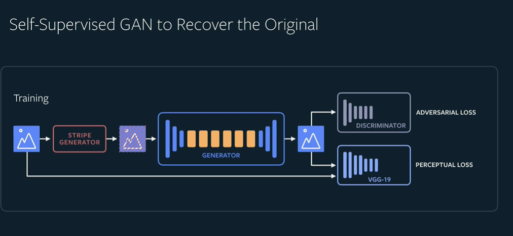
FB takes images, overlays it with random patterns. The generator tries to recreated the original while the discriminator tries to discriminate between the originals and the image generated by the generator. The model minimizes the adversarial loss which captures how well the system can fool the discriminator as well as the perceptual loss which captures how well the generator is able to recreate the original.
After training, just the generator can be used to remove patterns from images.
Another interesting application of this technique at Facebook is machine translation without labels.
This relies on creating automatic word dictionaries. First,you create vector representations for vocabularies in each languages and leverage the fact that the vector representations of the same word in different languages share structure to learn a rotation matrix to align them and produce a word by word translation.
Then you build a language model in each language to learn the sentence structure in each language. This language model can then be used to reorder the word by word translation produced in the previous step. This gives you an initial model to translate between the two languages (L1 to L2 and L2 to L1).
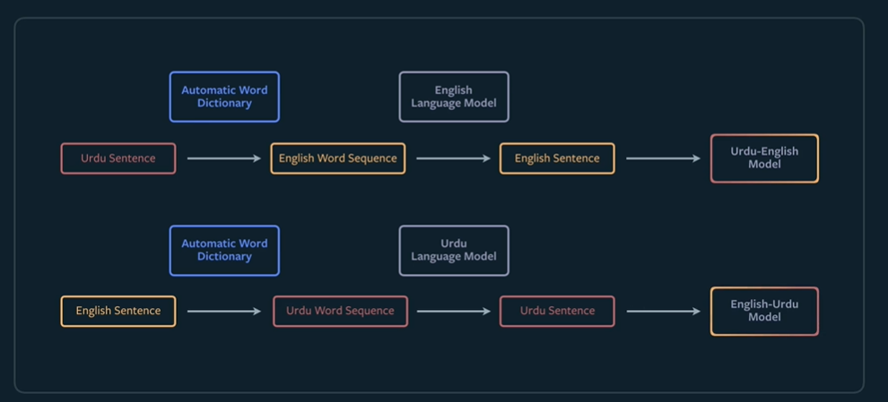
Now a technique called back translation can be used to iteratively improve the model. In this method, you take the original sentence in Language 1 and translate this to Language 2 using the initial L1 to L2 model. Now you translate this back to language 1 using the L2 to L1 model with the original sentence in Language 1 being the target. This will allow you to improve the L2 to L1 model. By flipping the order of the translations, you can also improve the L1 to L2 model
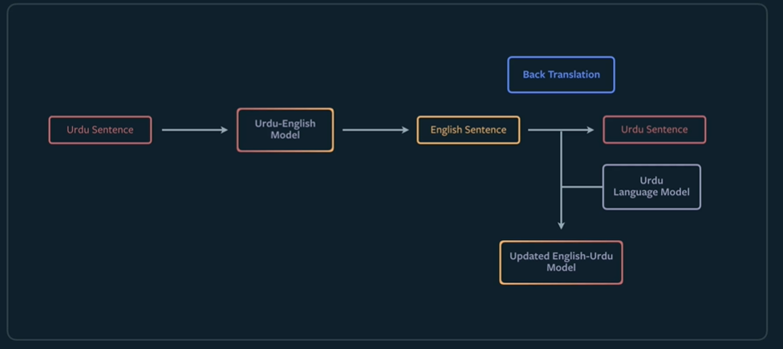
- Reinforcement Learning:
Facebook uses RL to recommend notifications to users on Instagram.
FB also has created a platform called Habitat ‘a research platform for embodied AI agents to operate in real world-like environments and solve tasks like navigation, question-answering, et cetera’.
2) Operationalizing AI at Scale: From drift detection to monitoring business impact | IBM Watson
Note: See my post on concept drift for a general understanding of the problem.
- Fair Credit Act requires a sample of model decisions to be explained to the regulator. Same with GDPR.
Watson Openscale provides the following capabilities:
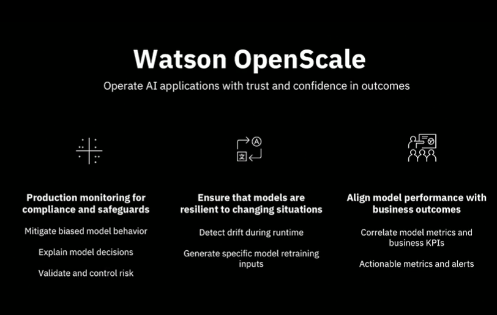
Important to realize high model performance doesn’t always correlate to high business performance. Need to correlate model KPIs and Business KPIs. IBM openscale will automatically correlate model metrics in run time with business event data to inform impact on business KPIs.
Types of concept drift:
- Class Imbalance. e.g. The imbalance ratio shifts.
- Novel Class Emergence e.g. A new category of chats in a chatbot
- Existing Class Fusion e.g. A bank wants to merge the loan approved class with the loan partially approved class
Accuracy Drift: Has model accuracy changes because of changing business dynamics? This is what businesses really care about. This could happen due to:
- Drop in Accuracy: Model accuracy could drop if there is an increase in transactions similar to those which the model was unable to evaluate correctly in training data
- Use training and test data to learn what kind of data the model is making accurate prediction on and where it is not. You can build a secondary model to predict the model accuracy of your primary model and see if the accuracy falls
- Drop in data consistency: Drop in consistency of data at runtime compared to characteristics at running time.
E.g. % of married people applying for your loan has increased from 15% to 80%. These are the kind of explanations that are accessible to a business user.
- Open scale can map a drop in business KPI to the model responsible for the drop and identify the samples of data that has changed.
3) Applying AI to secure the Payments Ecosystem | Visa Research
Data Exfiltration: Unauthorized copying, transfer or retrieval of data
Merchant Data Breach: Occurs when an unauthorized part accesses a merchant’s network and steals cardholder data. Cardholder data is later used to commit fraud.
Once a breach occurs, the criminals may enrich the data they have collected and then bundle and resell it on the dark web.
Visa’s goal is create an AI based solution to detect such breaches as early as possible with high accuracy and recall.
Solution
Visa uses a semi supervised CNN for label augmentation given incidences of data breaches are extremely rare. For detection or classification of breaches a supervised CNN + a Deep Neural Net is used.
For each merchant, a table is created recording the first instance a card is used at a merchant along with subsequent transactions at the same merchant with any incidence of fraud( the fraud may have happened at the same or different merchant). This table is transformed into an image which captures the same information.
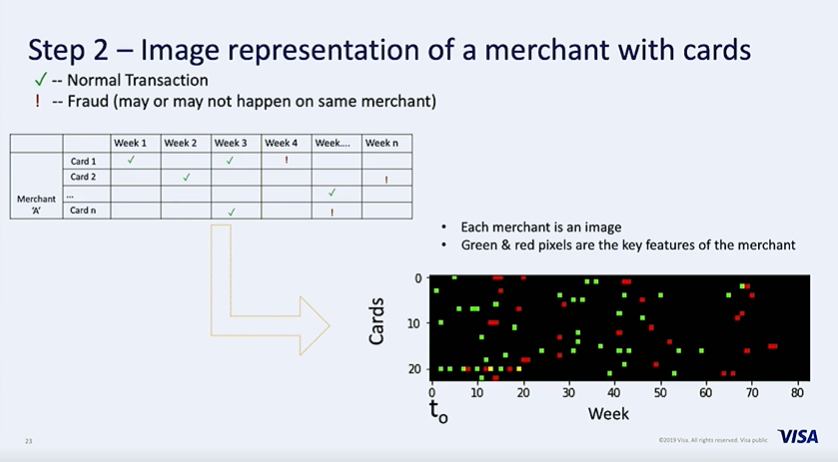
In instances where no breach occurred, the image would show authorizations(green) and fraud(red) being distributed across the image whereas for instances where breach occurred, there would be a clear separation between the two.
A CNN is trained on the available labelled data to extract features that are indicative of a data breach. This model is used as a ‘feature classifier’ (in image below) to label the unlabeled data. The enriched data with labels is then used to train a second classifier to actually detect fraud.
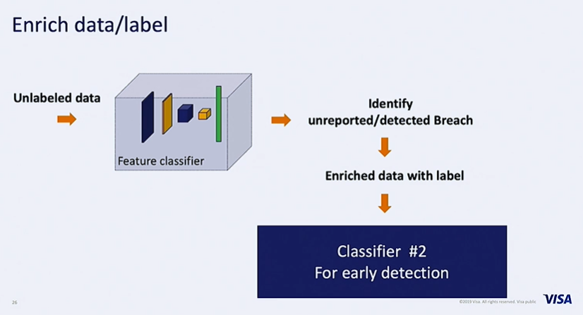
The second classifier uses more near time features to enable early detection of breaches.Time series features are prominently used. Multi channel time series that combine multiple time series are created and this is fed into a CNN, The features extracted by the CNN along with more static features such as type of merchant or location of merchant are fed into a deep neural network with the labels being those generated by the first CNN.
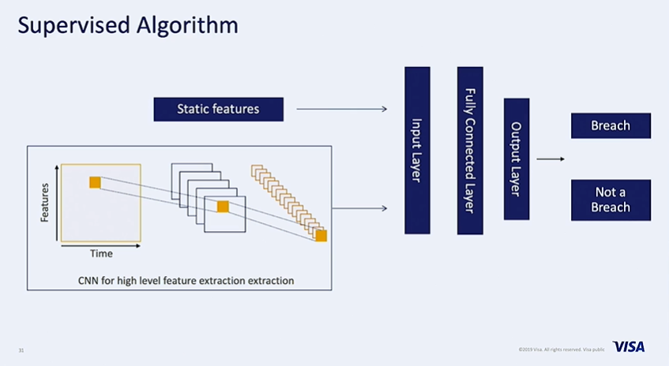
The final solution looks as follows
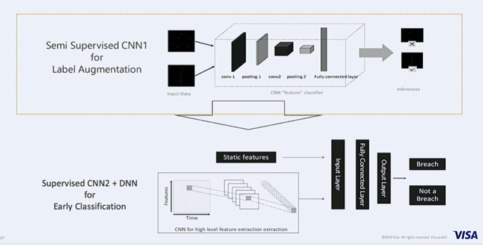
4) Recommendation system challenges at Twitter scale | Twitter
Recommendation systems can be content based, collaborative filtering driven or a hybrid of the two.
- Given twitter has user follows as a signal, collaborative filtering is a more natural approach
- Content based approaches are more challenging given short document length, multi lingual content and multiple languages within the same tweet.
- Recommendations served include
- user-user: Who to follow
- user-item: Home timeline with tweets. Which tweet to follow
- item-item : Recommend new trends/tweets etc.
An item at twitter can be tweets,events,trends,moments or live video/broadcast.
Twitter faces a unique challenge that the shelf life of a tweet is typically only a few hours unlike movies or e-commerce products that have a shelf life of months or years. People use twitter to keep up with the most current information.
This figure provides a framework for thinking about recommender systems.
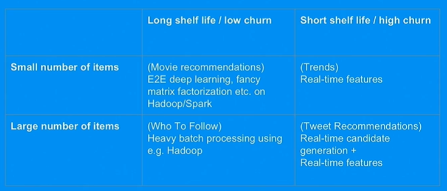
- Small Number of items + Long Shelf Life: Ideal spot to be in
- Small Number of items + Short Shelf Life: Can’t have a cold start problem because items disappear quickly
- Large Number of items + Long Shelf Life: A doable problem
- Large Number of items + Short Shelf Life : The hardest problem
Question: What to optimize recommendations for? Can be retweets, likes, CTR, DAU/MAU etc. Optimizing too hard any of these may not be appropriate. Optimizing for clicks promotes click baity content, while optimizing for engagement may reduce diversity.
- Recommendations at twitter do not assign higher weights to a tweet from a verified user
Challenges in User - Item Recommendations
Distribution of content and user interests keep changing over time so the recommender system is always predicting out of distribution.
Content keeps changing and user’s interests keep changing.
Interests can be long term, short term (e.g. elections) or geographic
Twitter is trying to map users and items into more stable spaces where learning can happen.
Co-occurrence of entities yields information about topics. e.g. LeCun + CNN vs White House + CNN
5) Using Deep Learning model to extract the most value from 360-degree images | Trulia
Trulia needs to rank candidate images based on an objective which can be quality, relevance, informativeness, engagement, diversity or personalization. If there are multiple images, a few need to be selected to be displayed to the user.
Image selection can be based on behavioral data or through content understanding.
Selecting Hero Images for Real Estate Listings
Real Estate images can vary widely in quality and content. Zillow needs to select a primary image(hero image) to display along with the listing.Typically, exterior images are selected as the primary image which may not be appropriate.
A good hero image must be: * Attractive * Relevant - Informative of the listing * Appropriate - No irrelevant advertisements
Turning 3D panoramas into thumbnails
The goal is to select an appropriate thumbnail shown on the upper half of the image from the panorama image below it.
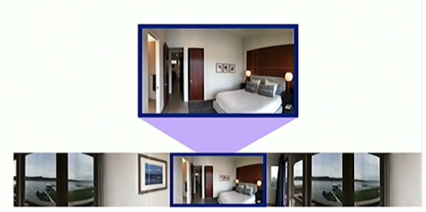
This can be done by using an equiangular projection as a thumbnail or by selecting a thumbnail from possible rectilinear projections.
The first approach is to present the entire equiangular projection.
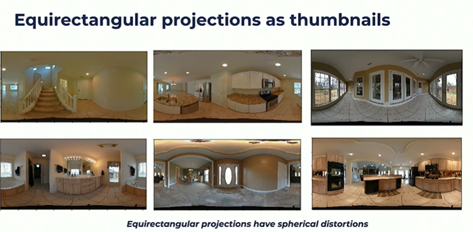
Clearly this results in some distortions
The second approach is shown below. Here you project a selected portion of the panorama into the 2D domain.
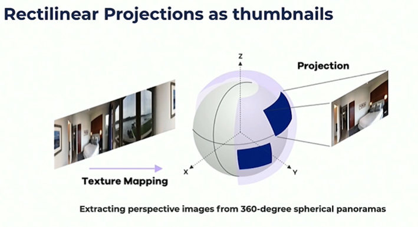
Here you need to select the most salient thumbnail from multiple possibilities. A salient thumbnail must be informative, representative, attractive and diverse.
For example. Image C below is the most salient thumbnail.
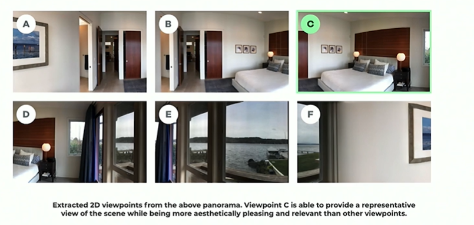
The Thumbnail Extraction Pipeline is as follows
- Optimal Field of View (FOV) Estimation
This has to be done because different cameras has different vertical FOV. For e.g. an I-phone has a sixty degree field of view and has to be padded with zero pixels while more professional cameras have an 180 degree vertical field of view .
- Extracting 2D viewpoints from 360 degree panoramas
- Extract saliency attributes and compute saliency scores
- Rank candidate viewpoints by sailency scores
- Apply diversity filter and return top N candidates
Computing Sailency Scores
Trulia developed 3 different CNN models for - Image Attractiveness - Image Appropriateness - Image Scene Understanding
Also, gaussian kernel smoothing is used to account for the fact the models are trained on 2d images while the test data are 360 degree panorama images.
The aggregate score from the 3 models is used to compute overall salience score per viewpoint.
Training Sailency Models
- Resent/Inception architectures pretrained on Imagenet/Places365 are fine tuned on internal Scenes60 data set.
- This model is then fine tuned on Trulia’s Appropriateness and Attractiveness data sets.
- Binary Cross Entropy loss is used for the Appropriateness and Attractiveness data sets while a 60 way categorical cross entropy loss is used for the scene understanding model.
Estimating Image Attractiveness
This is set up as a supervised problem and requires labels that can be quality ratings on some scale or pairwise comparisons. However this is highly subjective and human labels are expensive to acquire.
So a weakly supervised approach using the meta data available from the listings is used. Home price is used as an alias for attractiveness as luxury homes have professionally taken ,well staged photos while low price homes typically have low quality images.
The Grad CAM approach is used to visualize saliency to ensure the model is learning the right concepts from these weak labels.
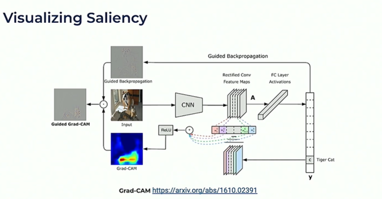
To ensure diversity in top N recommendation, maximal marginal relevance - MMR is used
6) A framework to bootstrap and scale a machine learning function | Workday
Workday uses a single platform on top of which all applications such as payroll, HCM live. The platform simply exposes API for the application teams to use.
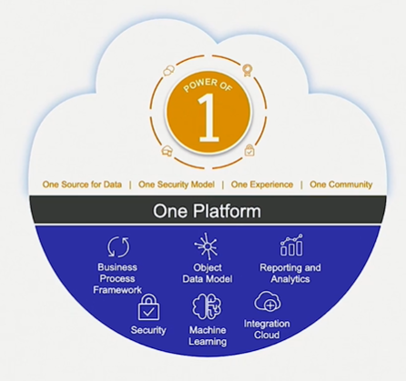
Workday is used by 40% of Fortune 500 and 50% of Fortune 50 giving them vast amounts of clean data to train ML models.
Challenge: ML service to scan receipts and auto populate an expense report. Ship in 6 months.
Very import to Define the Win and define success metrics: For this project goal was to create an ML Service that scans receipts with 80% accuracy that is delivered in private and public clouds for all customers in 6 months.
Off the shelf OCR solutions work best for traditional text and not for receipts.
Simulating data was not sufficient to get to the expected level of accuracy. Workday did a receipt contest to get employees to upload receipts. 50,000 receipts were invested. Labeling was done by a data labeling team.
Deep learning framework chosen was MXNet for its Scala and Python support.
Step 1: Bounding Box Detection
- A deep learning model based on residual networks outputs center of the box, height,width ,angle of title and confidence.
Step 2: Text Recognition
- A deep learning model based on residual networks outputs text
Step 3: Mapping
- An assortment of models(rule based + deep learning ensembles) that maps a value to a field. E.g. 63.87 is a ‘Total’ and 1/27/2018 is a ‘Date’
All components were built using microservices architecture.
The Production architecture at Workday consists of an ML platform that supports CI/CD deployment,ML as a Service is built on top of this ML Platform which is consumed by Non ML Services and a UI.
When going from 0 to 1 in a new area such as deploying first ML Application, follow the START framework.
S: Select One Win (Unambiguous Value). Get alignment on success criteria
T: Team. Smaller teams work best.(< 1 pizza pie) Time bound (3 - 6 months). Focus on Learning
A: Articulate(Win and Gameplan) and Align(stakeholders)
R: Rally and Support - Protect team from external noise
T: Take Shortcuts (tech debt -accrue it). Speedy learning is the focus so this is ok. Target release for only one or two customers.
Finally - GET
G: Get Credit for the win and Gather Capital
E: Establish repeatable processes and platform
T: Transfer learnings to scale to 10
7) Artifical and Human Intelligence in Healthcare | Google Brain & Cornell University
Transfer Learning
Tranfer learning is widely used today. More pretraining data is not necessarily better data. Pre-training on curated data is often better. Paper
Better performance on imagenet does not always mean better performance on the target task. It depends on factors such as regularization and dataset.
Transfer Learning in Medical Imaging
Tasks: Chest X -rays and diagnosing diabetic retinopathy
Models: Resent 50 and Inception v3. Also considered smaller lightweight architectries which consisted of sets of CBR (convolution+batchnorm_relu+maxpool) layers
Takeways
- Transfer learning and Random initialization performed comparably in many settings
- CBRs perform as well as the big imagenet models
- Imagenet performance is not indicative of medical performance
- In medical applications, you typically have much smaller datasets for fine tuning. On a smaller dataset of 5,000 images the results are as follows. The lift from transfer learning is not signficant.
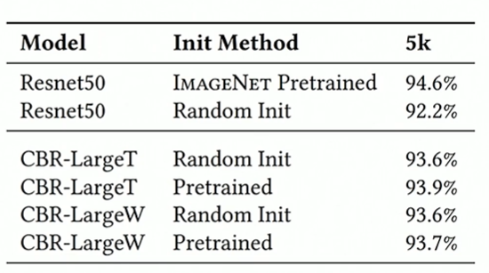
This suggests that the typical imagenet models might be overparameterised for tasks of interest.
Representational Analysis of Transfer
The goal is to learn whether irrespective of initialization , pretrained and randomly intialized networks learn the same concepts in the latent layers. However this is difficult as comparing two networks is challenging due to the distributed alignment problem. Features learned by one network don’t align with those learned by another network. E.g. one network might learn to recognize a dog using a single neuron ,while another network uses concepts learned by three different neurons to identify a dog.
Was carried out using CCA
Results of comparing representations shown below show that networks trained with random intialization are more similar to each other than those trained with pretrained initializations.
- Even though performance is comparable, the latent representations learned are different.
- It was also observed large overparametrized models change less through training.
Takeaway: Use pretrained weights for lower layers. Redesign and streamline higher layers of the architecture
- Having pre-trained weights converges much faster than random initialization. To speed up convergence of random weights, it is shown that keeping the scaling of the pretrained features,i.e.draw iid weights with same mean and variance as pretrained features, really helps.
AI for Health in Practice
Need to think about how AI systems work with human experts
Doctor disagreements occur often. AI can be used to predict doctor disagreements → Direct uncertainty prediction(DUP)
This is not far from predicting doctor error($ P_{herr} $). Uncertainty in prediction also gives a sense of AI error $ P_{AIerr} $
Can rank cases according to the difference between AI error and doctor error. On one end you have cases where AI error is very high and doctor error is low while on the other end you have cases where AI error is low and doctor error is high. For cases at the latter end, you can deploy an AI system, available human doctor budget can be deployed on other cases.
In practice you have some fraction of cases being looked at by the AI system, by doctors or by both. Typically a combination of both works best
8) Deep Reinforcement Learning to improvise input datasets | Infilect Technologies
Data augmentation is used widely in for training computer vision models. This talk addresses how to optimally prepare data sets using data augmentation.
Synthesizing images using GANs is also an option, but GANS are difficult to train and reproduce.
In the objection detection task being addressed here, there are certain minority classes which might need different types of data augmentation.
Types of augmentation typically used are:
- Color augmentations - Change pixel intensity
- Geometric Augmentations - Shear ,Crop, Translation etc,
- Bounding Box augmentations - Change a specific object in an image.
You can also encounter situations where certain types of augmentations should be strictly avoided. E.g. flipping images of digits, or contrasting traffic light images.
The goal is to create an automated data augmentation system so that you don’t have to manually try different types of augmentations and iterate to find the best model as shown below.
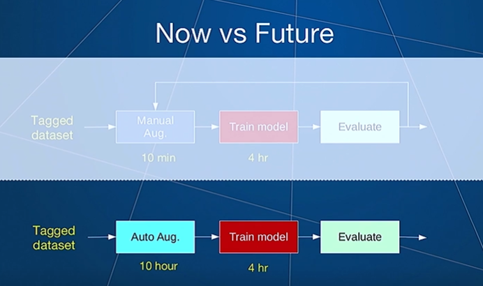
The proposed solution is 1) To learn a set of augmentation policies for the tagged dataset 2) Apply these augmentations to the dataset to create an augmented dataset for training
Policy: Apply N augmentations where each augmentation is applied with a magnitude and probability
Strategy: A set of policies
At training time, for an image, you sample a policy and apply the policy. Applying two different policies to the same images will result in 2 different augmented images.
Formulation of Strategy
A: Universe of augmentations
C: Classes in the dataset
$ V_{a,c} $: Magnitude of augmentation a for class c
$ P_{a,c} $: Probability of augmentation a for class c
These are two parameters we want to learn for each possible augmentation.
The solution is as follows:
A controller will generate a sample of a strategy.The environment trains the model using the strategy. The accuracy of the model is the reward based on which the controller is tuned.
SSD: Single Shot Detector
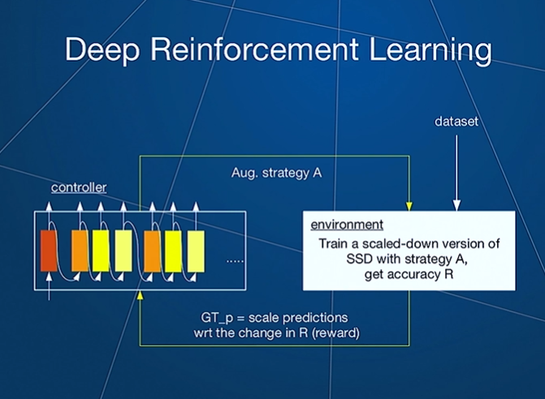
Controller
This uses an LSTM architecture which each outputs three softmaxes corresponding to 1) C classes 2) A augmentations 3) B buckets indicating magnitude of transformation
There are four LSTMs where the first proposes the class, the second proposes the augmentation for this class, the third proposed a magnitude for this augmentation while the fourth proposes a probability.
Together it says, for class c, apply augmentation a with magnitude b with a proposed probability. For each additional policy you want to learn, you have to add 4 more LSTMs.
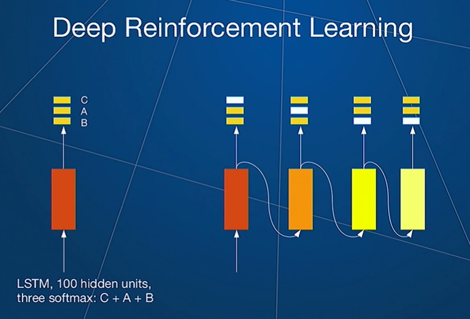
Training is carried out using proximal policy optimization
Based on the accuracy of the model, positive or negative reinforcement can be carried out to tune up or tune down the probability of a certain augmentation scheme.
The final results are as follows:
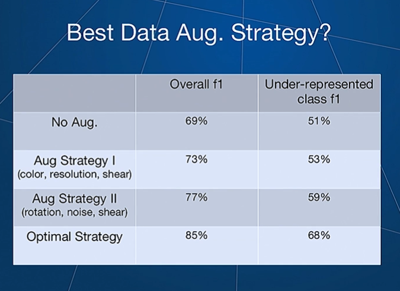
The system learned to carry out augmentations like contrast,edge augmentations, image crops and bounding box flips rather than rotation,blur or shear that are typically used.
Based on auto augment by Google
9) Defragmenting the Deep Learning Ecosystem | Determined AI
Challenges in AI Infrastructure
- Might take days to recover from faults. Training has to start all over again if a session fails
- This is particularly a challenge when training models like GANs that can take a couple of days
- There are options to save and reload models intermittently e.g. using tf.saved_model.simple_save and tf.saved_model.loader.load in TF.
- These might be inadequate as TF only saves weights and the optimizer state when the user also needs to save the TF version, random seeds, model definitions and input read positions which requires custom code. In summary your Deep Learning engineer has to spend a lot of time writing boiler plate code.
- Reproducibility
- Core tenet of science
- Important for collaboration so that models can be handed off to a colleague
Reproducibility is a challenge in DL because of
- Architecture
- Data - New data could be added
- Initializations e.g for hyper parameters
- Stochastic nature of optimization techniques
- Non deterministic GPU operations
- CPU multi-threading meaning operations could be carried out in different orders
Addressing this requires significant engineering expertise and use of containerization to pin versions of all underlying libraries.
Imperfect solutions are available in PyTorch and TF
- Hand implemented and slow tuning methods
- Needs cluster management to parallelize testing of multiple combinations of hyper parameters but there is no support for mete data management, fault tolerance or efficient allocation.
- Systems are not designed for multi-tenancy and sharing of resources
Clusters today don’t understand the semantics of deep learning
DL frameworks are built to train a single model for a single user on a single machine
Companies often use a calendar schedule to allocate resources between team members or go for fixed assignment.This can lead to low utilization and low scalability.
Can use tools like kubernetes, Yarn or Mesos but these solutions do not offer job migration or auto scaling and is not much better than a queue
Only FAMG companies have the necessary infrastructure
Most tools like PyTorch and TF are focused on just the model training component of the modeling life cycle shown below
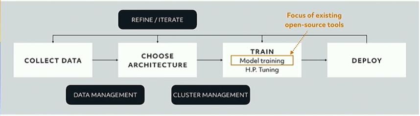
Determined AI is focused on holistic and specialized AI software infrastructure.
Ideal AI Infrastructure
Ideal AI infrastructure will address these challenges by offering the following
- Check pointing would be taken care of OTB
- Infrastructure would monitor and retry failed jobs automatically from the latest checkpoints automatically
- Infrastructure would manage its own checkpoint storage according to user defined rules (e.g. keep models with n best validation errors)
- Infrastructure could leverage checkpoints to enable reproducibility or distributed training
- All of this would be transparent
- Reproducibility should be addressed by providing the following features
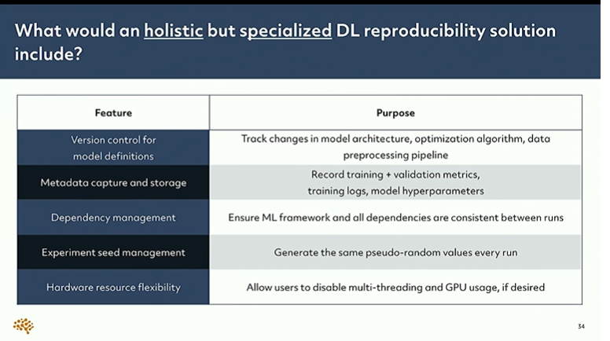
- Hyper band is a resource optimized hyper parameter tuning technique that uses active learning and early stopping.It performs far better than conventional techniques
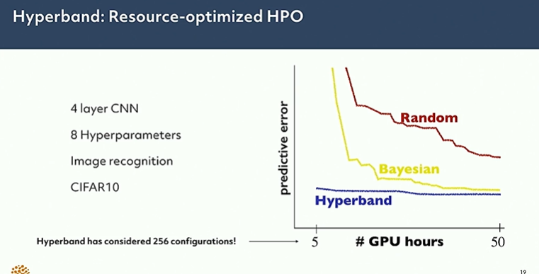
- On average, it is 50x faster than Random search, 10x faster than Bayesian optimization
- Also works really well for Neural Architecture Search. Outperforms Google’s internal system by 3x
A holistic and specialized AI infrastructure that Determined AI has built looks like this:
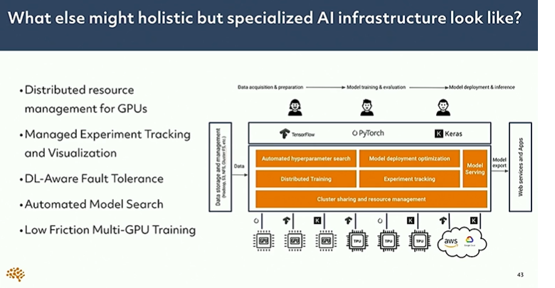
10) Industrialized Capsule networks for text analytics| Walmart Labs & Publicis Sapient
Broad overview of NLP and Text Analytics
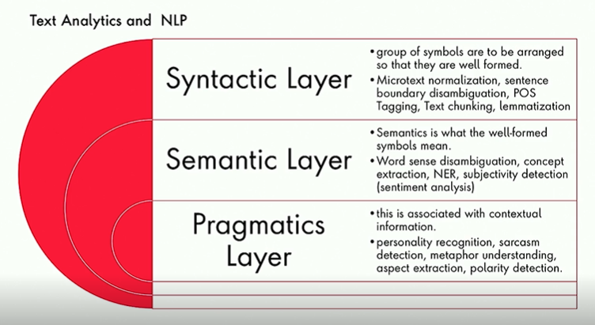
- LSTMs outperforms CNNs for text classification as there are long term dependencies in text and outputs are not driven by just one or two key words or phrases.LSTMs also care about ordering of features whereas CNNs do not.
To make CNNs work, kernels with large dimensions have to be used meaning number of parameters increase exponentially. Pooling also leads to loss of information.
- CNNs are invariant, so input perturbations do not change output . It is unable to recognize transformations
- Capsules are equivariant. Outputs change when input changes due to perturbations and hence they are able to recognize transformations of input.
Overview of Capsule Networks
1) Moving from Scalar to Vector. Pooling produces a scalar in CNNs. In a capsule network, the output is a vector instead.
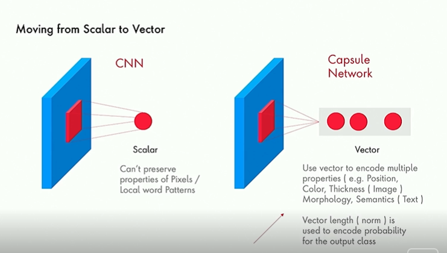
- The output vector is able to encode multiple properties of the input region such as color, thickness etc.
- Vector length also encodes the probability of the output class.
2) Capsule Output Calculation - Forward Pass
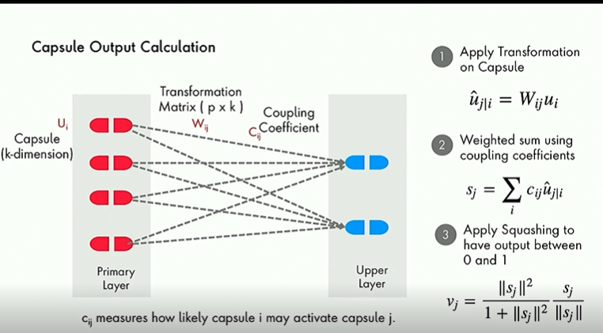
Apply an affine transformation (matrix multiplication that preserves lines and parallelism). This is supposed to capture the relationship between various components (e.g. face, nose, ear) to the image (face) in the higher layer. Or how ordering of words affect sentiment
Coupling coefficient learns the strength of the relationship between two layers
Squashing function changes the length of the vector so that it is between 0 and 1 so that it encodes a probability
3) Dynamic Routing - Backward Pass
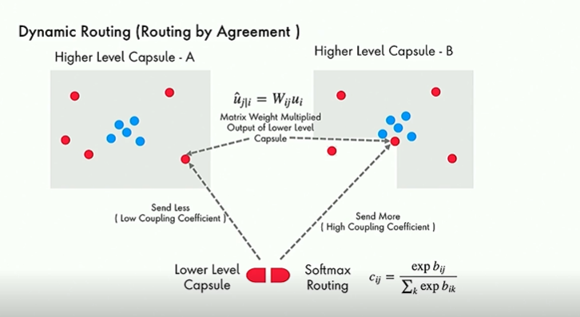
Assume there is one lower level capsule and two higher level capsules as shown above. If more lower level capsules are in agreement, assign higher coefficients whereas if lower level capsules disagree(e.g. eyes are spatially co-located), assign lower coefficients.
The Capsule network architecture is shown below. 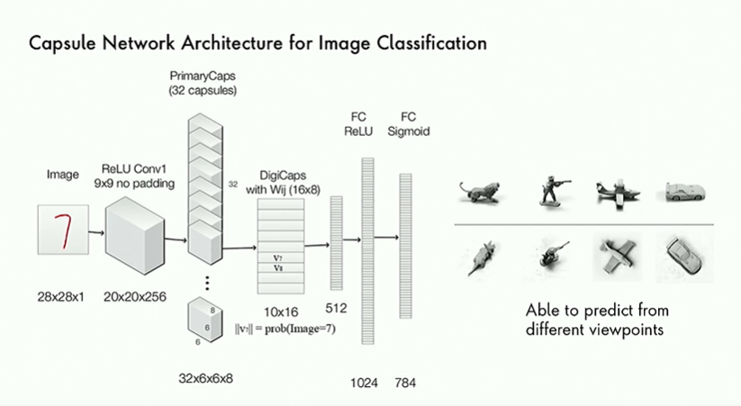
Paper on application of capsule networks to text classification: https://arxiv.org/abs/1804.00538
- Capsule networks outperforms other networks for multi-label classification with little additional data
Industrialization of Capsule Networks
- Kubeflow has been used to productionize capsule networks
11) Building Facebook’s visual cortex | Facebook
Facebook platform has evolved from being a text heavy platform to a photo and video heavy platform including AR/VR.
Some applications of applications of visual cortex
- Automatic Alternative Text:
Over 200 million visually impaired people use screen readers to navigate websites. These usually directly reads sentences tied to the images that are usually manually hand curated by the person uploading the images.
These sentence descriptions are automatically generated by taking the outputs from FB’s OCR and Image classification system (that categorizes images into various categories)
- Instagram explore ranking.
Create a personalized news feed based on type of photos you upload.
- Violating Content Classifiers
Vision signals are used as features in multi-modal fusion classifiers that can identify policy violating content.
- Visual similarity
Use identified violations (e.g. Marijuana advertisements) to identify similar violations
Visual Cortex is a system that operates on a stream of uploaded images and videos. It runs models on these and stores results. It uses the same backbone model across all the above tasks.
Some examples:
Model using MLP + Softmax to identify policy violating content
Model that works as a feature extractor that produces embeddings for downstream models
Model to produce embeddings, compress it and use it in a KNN model
Major considerations while building Visual Cortex given FB’s immense scale:
Data annotation is costly
Dynamic demands and trends . e.g. Identify ice bucket challenge. This is a long tailed problem
Dependencies due to downstream models. Continuously improving visual cortex is challenging given these dependencies
Efficiency. To run 1 billion images(1 day of data) on 1 machine sequentially through RexNeXt 101 takes 1,736 days.
Reducing Dependency on Supervision
- Weakly supervised Learning: Noisy Labels
Consider using Instagram hashtags. This could have issues such as non-visual tags, missing tags or wrong tags.
Proposed Approach: Pre-train a model to predict hashtags and then transfer this to an image classification model
Details are shown below.
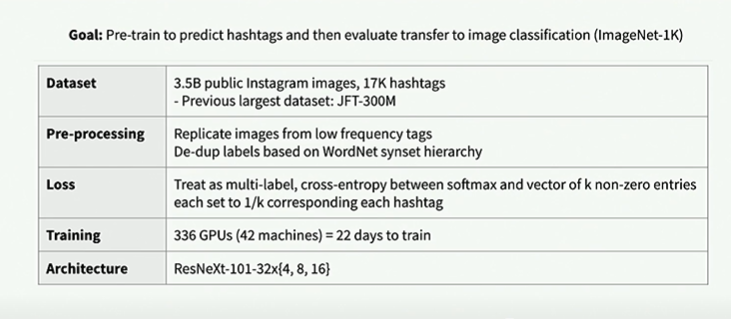
Findings:
As size of data used for pre-trained model increases, the performance on the target task increases.
Initially used 17,000 hash tags, then reduced to 1000 hash tags to match Imagenet classification task. Accuracy improved as the labels space for both are now similar.
As model capability grows in a weakly supervised setting, final accuracy improves. This does not hold for fully supervised models.
b)Semi Supervised Learning: Small amount of labelled data + Large volume of unlabeled data
This was considered as
- Hash tag data is not accessible outside Instagram
- Not utilizing large amounts of unlabeled data
- Hard to deploy very large models
Proposed Approach:
Train teacher model(e.g. RexNeXt 101) on labelled data (e.g. Imagenet)
Run teacher model on unlabeled data
Take top-k images per each concept/class
Train a smaller student model (e.g. ResNet - 50) and fine tune on original image net dataset
Use student model as a pre-trained network.
Findings: As volume of unlabeled data used increases, accuracy of student model on target task also increases.
- Self Supervision: No labels
- E.g. Create a model to reassemble an image from scrambled pieces like solving a jigsaw puzzle.
Such a model will have enough semantic information to transfer to a different task.
Greater the data used for this pre-text task, greater the accuracy of the transfer learned model on the final task.
On Imagenet 1K, performance of self supervised methods falls well short of semi supervised techniques.
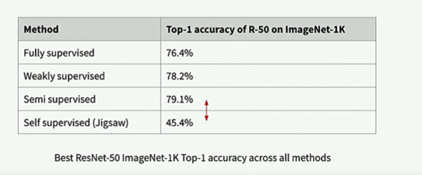
Human labelled data is still a critical component of ML systems.
Efficiency
- Model Size - Quantization can decrease accuracy
Idea 1: Share same pre-trained network across multiple tasks; run all images only once through this trunk. The common trunk will have multiple heads fine tuned for various tasks
Idea 2: Invest in efficient backbone architectures.
Idea 3: Invest in efficient operations such as octave convolutions. This has reduced processing power required by 40% and forward pass latency drops by 50% for a ResNet 50
Continuous Improvement
Define good model APIs to influence the architecture of upstream systems
Contract with downstream systems for compatibility support.
- Predictably push new backbone every N months with N -1 backwards compatibility.
Example: If a new backbone(V2) has been developed to generate better embeddings. Instead of running v1 and v2, only v2 will be run to emit both v1 and v2 embeddings. This old embedding is backwards compatible and is realized using knowledge distillation. - List of concepts in v2 will be a super set of v1 and impersonate old calibrated scores using a look up table
Dynamic Demands
- Created platform to quickly train linear classifiers
- use active learning to quickly get high quality labels from annotators
- Concept drift measured programatically and unit tests to ensure outputs are consistent from day to day.
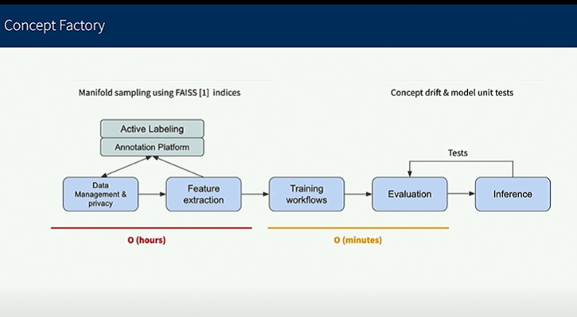
Slide deck available here
12) Deep Learning in the Tire Industry | American Tire Distributors (ATRD)
Characteristic of the Tire industry: - Purchases are rare and so data is sparse - Tires are manufactured by certain companies and distributed by ATD to retailers such as Walmart or Costco
Business Problems in Pricing: - Price performance monitoring - Pricing opportunity identification - Dynamic pricing recommendations
- Addressed using Anomaly detection, time series decomposition, demand modelling(discounts), pricing recommendations
Business Problems in Operation - Warehouse staffing efficiency - How many people required at a given location and at a given point in time?
- Addressed using Labor demand forecasting and labor optimization
Forecasting Staffing requirements
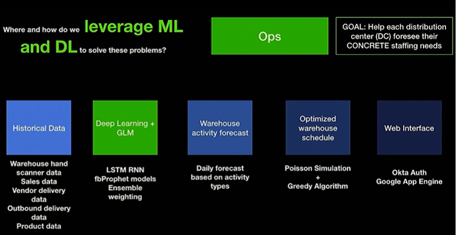
Data collected include each staff associate’s activity, number and type of tires being handled. The approach uses dynamic weighting of a Prophet model(Traditional time series) and an LSTM model.Forecasts are made for each distribution center.
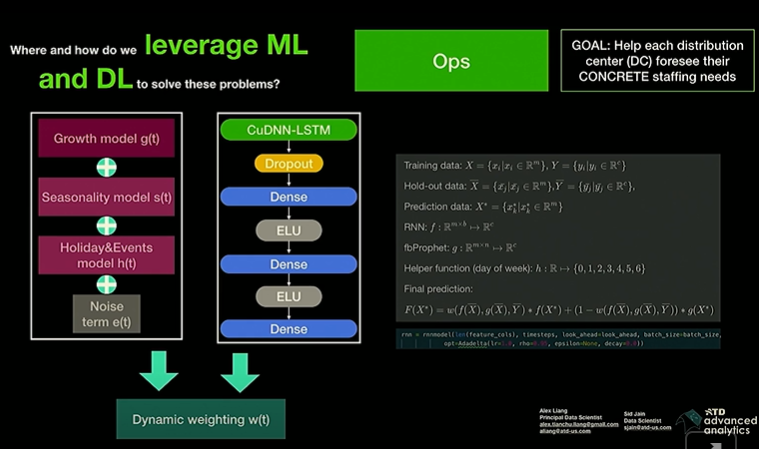
Saved 5-10% in labor costs with this approach.
Pricing Product Demand Model
Combination of a market demand model and MIP optimization to simulate pricing strategies for different products.
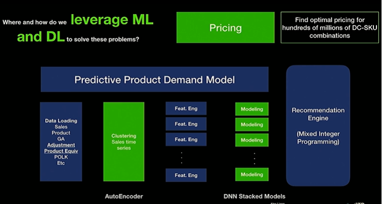
The two green blocks show modules where Deep Learning is used. Given data is sparse, sales were aggregated at a week and distribution center level. An embedding for the time series is generated by an auto encoder which is then clustered. The clustering identifies product buckets such as snow tires and more commonly bought tires with different profiles.
A new model is built for each identified cluster.The final model is obtained by stacking a Random Forest Model, an XG Boost model and a DNN model. The second level stacking model is also a DNN.
Model stacking helped with overfitting and accounting for anomalous behavior.A single model is unable to account for such anomalous behavior. It was also observed that different models perform best for different clusters,so stacking helps avoid manually selecting models for different clusters. DNNs perform best when lots of data are available, tree based models perform better for sparse data.
Data drift is not a concern as tire demand is largely predictable apart from expected seasonality.
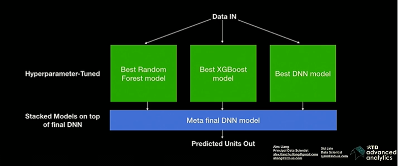
13) A framework for Human AI Integration in the enterprise | Rakuten
Moaravec’s paradox: What is easy for humans is difficult for machines and what is easy for machines is difficult for humans
- AI can perform well on the head of the distribution while humans work better on the tail.
- Machines are susceptible to adversarial attacks
External Factors
Regulations sometimes point to AI-human integration. E.g. Article 22 of EU GDPR requires a human in the loop for providing explanations.
High risk applications like medical diagnosis often require human in the loop to mitigate risk
Competitive Advantage
Humans in the loop can reduce the need for:
Huge volumes of labeled training data
Massive amounts of computing resources
Armies of data scientists
Human in the loop can overcome limitations in an algorithm’s accuracy
Dialog
Human - AI integration requires a dialogue between AI and humans
- The human participant can be the end user in cases where the risk is low. e.g A/B Testing , Multi armed bandits
- If the risk is medium, crowd sourcing can be used . E.g. product categorization
- If the risk is high, use your own workforce. E.g. data scientists or legal teams to comply with regulations
Designing a dialogue interface requires an understanding of human psychology, design thinking and paradox of automation. i.e. as automation increases, human skills erode and human intervention cannot be relied upon.
AI Understanding Humans
- Supervised Learning with training labels is the best example of this.
- Active learning allows AI to ask questions of humans when it is not confident in it’s predictions. This also reduces redundancy and reduces manual labeling effort.
Human Understanding AI - Explainability
Explainability algorithms can be classified along the following dimensions:
- Model agnostic vs Model specific
- Local vs Global
- Features vs Instances vs Surrogates
E.g. If a bank tells you a loan was rejected because your income was low: It is a local, feature based explanation. If the explanation for a diagnosis is that the patient is similar to other patients which were diagnosed: it is a local, instance based explanation.
Rakuten has a hierarchical product classifications system that classifies products based on a description. E.g. Electronics → Cell Phone → Smart Phone. The model provides explanations for the classification. E.g. Electronics because it found ‘256 GB’ in the description. Smartphone because it found ‘I phone’ in the description.
Some of the explanation algorithms provide justifications rather than explanations.
Explainability: Optimize interpretability given a model
Modifiability: Optimize a model given interpretability. Make interpretability a constraint that needs to be satisfied,and optimize the model.
Define an abstraction layer that humans can understand and modify.
E.g. A steering wheel, gear shaft and gas pedal. How this affects the engine is abstracted.
E.g. You can develop a black box model to extract order number form a receipt but this can be hard to debug. Instead, Rakuten build a model that generates a template; a piece of code that can be run to extract the order number. Human operator can modify this template.
Benefits of modifiability: * Mitigate accuracy - interpretability tradeoff * Enable debugging even by non-AI specialists * Maintain high quality of end results. Human has to intervene if model is not performing well.
Other example: Stitch fix algorithms that recommends clothes but is modified by stylists. The selection of clothes acts as an abstraction layer.
System Design with Human- AI Integration
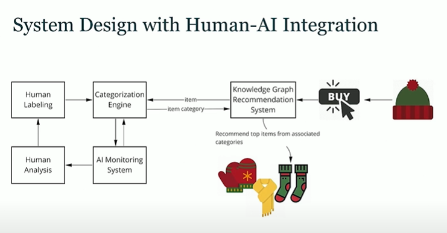
Think of humans and AI as components in a system.
The layer of abstraction is the knowledge graphs which has products and entities and two types of relations. A product can belong to a category and categories are related to each other. The system recommends products from a complementary category to the user.
Product categorization has to be monitored. Manually identifying misclassifications is not possible. This can be reduced to an anomaly detection problem. e.g. identify a wine product being misclassified in the tire category.
Humans can thus focus on anomalies and label just those.
- Rakuten has moved folks who work as humans in the loop to more AI centric roles.
14) Data Science without seeing the data: Advanced encryption to the rescue | Intuit
Explosion in data and number of people accessing it poses information security risks.
Goal is to do ML without seeing the underlying data.
Fully Homomorphic Encryption(FHE): Encrypts for security without losing the information necessary for computation.
Microsoft’s SEAL is a popular open source toolkit used for FHE. It abstracts the advanced mathematics for encryption for software engineers.
Also see here for a more thorough introduction.
All computations cannot be done using FHE
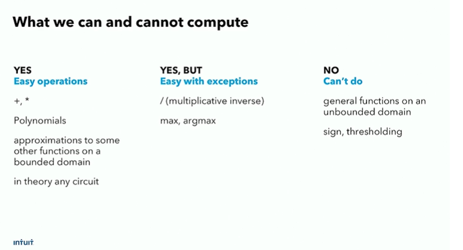
Not possible to do IF statements i.e. threshold functions.
Use case in Medicine:A gives B encrypted medical data. B runs proprietary algorithm and gets an encrypted diagnosis.A accepts this and decrypts it to get diagnosis.
- Intuit wants to encrypt all customer data on AWS and still use the data to run ML.
- Tree based models are most widely used at Intuit, but you actually need to do branching which is hard with FHE.
- Thresholding functions required to split decision trees can be approximated using a polynomial function. 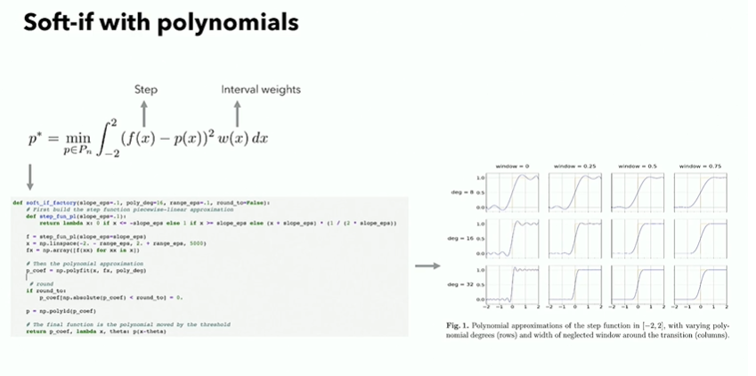
Decision Tree Training
Unlike regular decision tree where the data is split and only a partition of the data is handed down to subsequent nodes of the tree,with FHE, the entire data has to be passed down through each layer as the data is encrypted. Only when you decrypt the full expression is an observation assigned to a leaf.
This can be intractable if the trees are very deep.
Inference with FHE is still very slow. In 2009, the slowdown was $ 10^7 $, in 2019 it is $ 10^4 $
- Batch training and inference can be done on encrypted data.Not suitable in an online setting.
15) Mozart in the Box: Interacting with AI Tools for Music Creation | Midas
- Fear of automation is real: Even for an autonomous car, people would like to see the speedometer reading.
Complex systems are hard to innovate on, the airplane pilot’s complex is still extremely complex despite all the innovation
- Designed by experts for experts
- Have many critical parameters ad controls
- Require intense training and learning effort
- Mistakes and failures must be avoided at all costs
- The users are extremely conservative
Complex systems are also liable to the Active User paradox which reduces user motivation to spend any time just learning about the system. This can manifest in a few ways
Production Bias: When situation appear the could be more effectively handled by new procedures,they are likely to stick with procedures they already know regardless of efficacy. You want to start using something without reading the user manual
Assimilation Bias: People apply what they already know to new situations. Irrelevant and misleading similarities between new and old information can blind learners to what they are actually experiencing, leading them to draw erroneous comparisons and conclusions.
Midas launched the world’s first AI and cloud based mixing console platform in Aug 2019.Predictably, this triggered a fear of automation from several sound engineers.
To market automation using AI:
- Explain the purpose of automation
- Make clear what the system and do and how well it can do it.
Types of Automation
We can choose to automate along any of these dimensions
- Information acquisition
- Information analysis
- Decision selection E.g. Breathing us automated but we can control it to a certain extent
- Action implementation E.g. The heartbeat is completely automated
Levels of Automation
0: No Automation
1: Assistance
2: Partial Automation
3: Conditional Automation
4: High Automation
5: Total Automation
Refer to this paper for more details.
We can build systems with various levels of automation(manual to fully automated) across the candidate stages for automation as shown below.
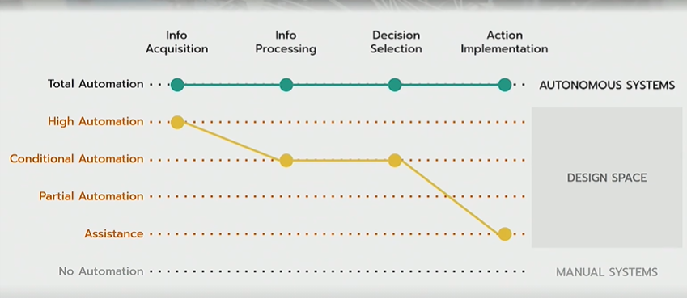
You can also build adaptable systems by allowing ranges of automation for each type of automation, a human in the loop can then interact with the system specifying the right level of automation as shown below.
How the system gives feedback to the user can also be of the following types
- Optimistic: Show everything as if it were correct
- Pessimistic: Show only what is known to be correct
- Cautious: Show the uncertainty of the system
- Opportunistic: Exploit uncertainty to improve the system (Active learning)
The following principles relating to purpose should be kept in mind while designing the system
- Explain the purpose of the AI
- Make clear what the system can do and how well it can do it
- Show the performance of the system choosing appropriate feedback strategies
- Show when the system is not confident
- Design for appropriate trust, not for higher trust.
The following principles relating to interaction should be kept in mind while designing the system
- Minimize the impact on the existing workflow
- Support efficient invocation(of AI system)
- Support efficient correction
- Support efficient dismissal
- Make the level of automation adaptable
- Design clear transitions between the different levels of automation
- Focus on UX from the early stages of algorithmic research
The following canvas can be used for such system design.
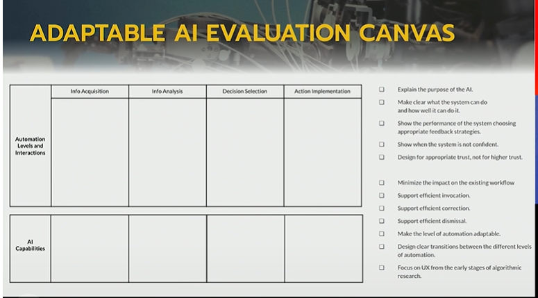
The following image shows how the AI Music system was designed
16) AI for Cell Shaping in Mobile Networks | Ericsson
Mobile networks present an optimization problem where the network has to provide optimum coverage for a large number of mobile customers using a limited spectrum. Some parameters of an antenna such as power, vertical tilt can be adjusted to modify coverage as shown below.
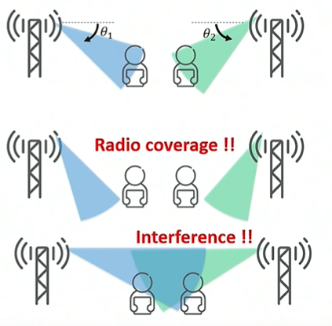
You may also wan to control antenna tilt deceptively as special events like a football game and a political rally can cause a sudden increase in the density of people in a location. This is typically done manually by setting rules.
Reinforcement learning can be used to do this.
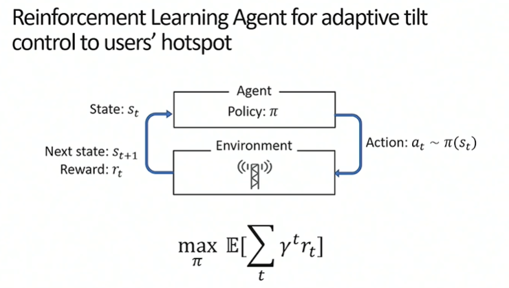
Policies were trained on simulated environments.
Lot of domain knowledge from tuning these antennas over the years are also available that need to be utilized by the AI system.
RLLib framework provided by UC Berkeley’s Rise lab was used. The algorithm used for training was A-pex
RL Formulation
A simulated environment was used . The simulator was plugged in through Open AI gym environment.
The agent was a CNN that takes a state as input and output an action vector.
State is the parameter of antennas,topology of buildings and user hotspots.
Actions determine increase or decrease of tilt of an antenna.
Reward is average increase in throughput for subscribers.
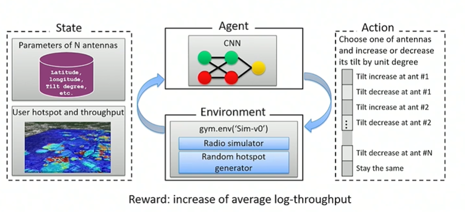
The image below shows the setup.
The image on the right shows the typology of the city grid being served by the antenna.
The image on the left shows distributions of subscribers with warmer colors showing better coverage.
The image in the middle shows the position of the antenna and tilt with warmer colors again indicating better coverage.
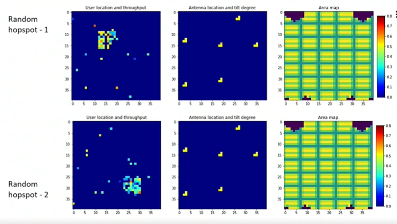
As the RL algorithm learns, you can the the image on the left becoming warmer as their coverage improves.
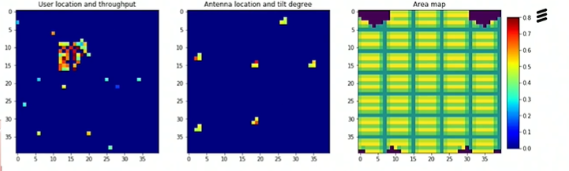
Training Set up
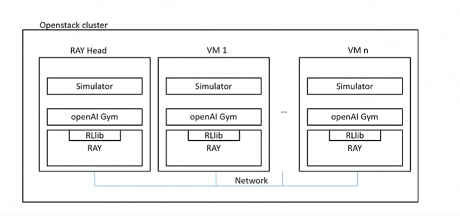
RL Algorithms
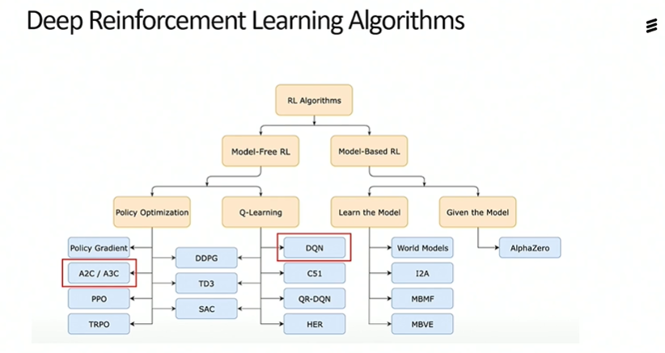
The A-pex algorithm used is an extension of the Deep Q Learning algorithm and was found to perform better.
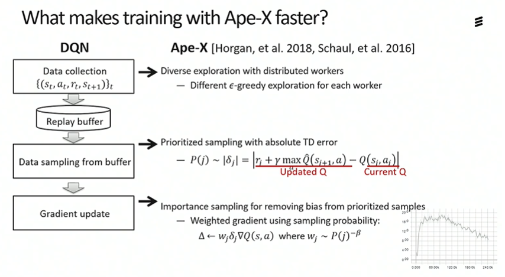
Using Historical Data
Given historical records of state of the system and action taken by experts are available, a supervised model or recommender system can be built on this data.You can also extend the historical data to include a reward corresponding to the state,action pair.
This can again be used for RL. Without a simulator you can’t do a lot of exploration.
Transferring from Simulated to Real Environment
Add noise to the simulations to make learning more robust.
17) Improving OCR quality of documents using GANs | EXL
The modern OCR pipeline is as follows.
- Input documents are fed into an OCR engine which converts the documents into machine understandable format
- Automated processing using ML/NLP
- Manual validation to ensure 100 % accuracy
- This may not work well if the input documents are highly unstructured i.e. have incorrect layouts, low resolutions or is very noisy with wrinkles,watermarks etc. This can be addressed either by improving the OCR engine or by improving the input documents fed into the OCR engine.
The enhanced pipeline is as follows:
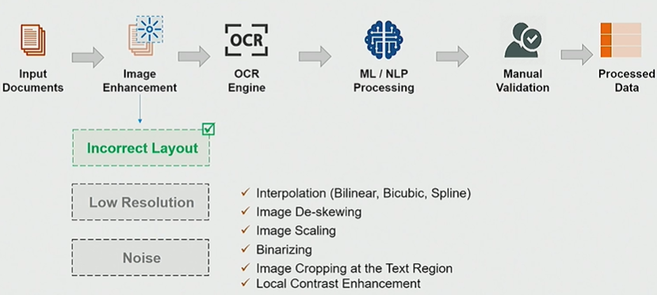
Although traditional image enhancement techniques are effective in addressing some problems, GAN based enhancements can improve the quality of input documents even further,
Below is an overview of a GAN. It consists of a generator and a discriminator acting in an adversarial fashion, one trying make real and fake images indistinguishable while the other trying to distinguish between the two.
Resolution Enhancement
Data Creation
High resolution English documents with different font-types, sizes and spacing were first converted to standard resolution(300 dots per inch (DPI)) using standard image processing tools and then converted to low resolution images at 75 DPU using random subsampling and bicubic Downsampling. The high-resolution and low-resolution image pairs are used for training the GANs
Data sets were also created by scanning high resolution English documents at high (300 DPI) and (low) resolution.
Training
The generator will not have a max-pooling layer as max-pooling layers lower the resolution of an image.Upsampling layers such as un-pooling (reverse of max-pooling) or de-convolution layers are used.
Custom loss with two terms are used
Adversarial loss looks just at the performance of the discriminator
Content loss captures the performance of the generator which again has two terms
- MSE between generated image and ground truth image
- MSE between the ground truth image and image generated using a VGG network
Although some use cases would require only the first of these two terms, for the OCR use case, this was found to perform better.
Given the generator is very sensitive to initialization, the model is trained on imagenet and the weights are transferred.
Evaluation
In terms of character level accuracy, the GAN enhanced images resulted in an improvement of 7 percentage points for enterprise grade OCR systems and an improvement of 80 percentage points for open source OCR systems.
In terms of word level accuracy, the GAN enhanced images resulted in an improvement of 9 percentage points for enterprise grade OCR systems and an improvement of 79 percentage points for open source OCR systems.
Document De-noising
Data
Clean documents with different font types, sizes and spacing were collected. Noise( Random noise, Gaussian noise, pattern noise) were added to these documents to create noisy documents
Clean datasets from kaggle were taken and synthetic noise was added to this to create noisy documents.
Training
The training process was identical to the one above and as seen below, the documents were de-noised effectively over successive epochs.
In other use cases, a Mask-RCNN was used to identify parts of documents that had address like texts,these regions were then enhanced using a GAN.
18) Fighting Crime with Graphs | (MIT + IBM)
Use of graphs to fight financial crime has been getting a lot of traction recently. This talk emphasized the use of Graph Convolutional Networks to create node embeddings that can be consumed by traditional machine learning models or standard neural nets.
Algorithms like node2vec and deepwalk have been used to create embeddings that capture the topology of a network, but these algorithms cannot capture the node attributes that might have rich information.
GraphSage is a Graph convolutional network algorithm that allows you to capture both the topology of a network as well as useful node attributes.Besides this is an inductive algorithm meaning that it does not need to be trained on whole graphs and can be used for inference on unseen nodes and graphs.
19) Data Science + Design Thinking - A Perfect blend to achieve the best user experience | Intuit
Design for delight by 1) Demonstrating deep customer empathy - Know customers deeply by observing them and define problems in human centric terms 2) Go broad to go narrow - Generate lots of ideas before winnowing them. Quantity first then focus on quality. 3) Perform rapid experiments with customers - Rapid prototyping and AB testing
20) Explaining Machine Learning Models | Fiddler Labs
Attribution problem : Attribute a prediction to input features. Solving this is the key goals of Explaining ML Models
Naive approaches to do this include:
- Ablation: Drop each feature and note the change in prediction
- Feature Gradient: $ x_i \frac {dy}{dx_i}$ where $ x_i $ is feature and $ y $ is the output
Integrated Gradients - This is a technique for attributing a differentiable model’s prediction to the input features
A popular method for non-differentiable models is Shapley values.
Both Integrated Gradients and Shapley Values come with some axiomatic guaranteed.The former uniquely satisfies 6 axioms while the latter uniquely satisfies 4. Side note: This is my go to reference for interpretability techniques.
Example of an axiom is the sensitivity axiom:
All else being equal, if changing a feature changes the output, then that feature should get an attribution. Similarly if changing a feature does not change the output, it should not get an attribution.
Integrated Gradients is the unique path integral method that satisfies: Sensitivity, Insensitivity, Linearity preservation, Implementation invariance, Completeness and Symmetry
Another problem related to interpretability that remains an open problem for many classes of black box models is Influence - i.e. Which data points in the training data influenced the model the most.
21) Snorkel
Snorkel is a weak supervised learning approach that came out of Stanford. More information available here
The key operations in the Snorkel workflow include:
- Labeling Functions: Heuristics to label data provided by experts
- Transformation Functions: Data Augmentations
- Slicing Functions: Partition the data specifying critical subsets where model performance needs to be high
For this approach to work at least 50% of the labeling functions need to be better than random.
22) Managing AI Products | Salesforce
To demonstrate value to business stakeholders, which is the ultimate goal of anyone who works in a corporation, it is essential to tie business metrics to model metrics. This should ultimately inform what kind of ML we decide to use.
The figure above demonstrates the accuracy of the model(x-axis) required to provide a material lift in the business metric(y-axis) e.g. conversion rate. If the base line improvement rate in conversion that we need to deliver is only 2%, a model that has accuracy in the range 50 - 75% is sufficient. This means we could rule out sophisticated models like Neural Nets that are harder to deploy and maintain and focus on simpler models that are easier to build or maintain.
23) Explainability and Bias in AI and ML| Institute for Ethical AI and ML
Undesired bias can be split into two conceptual pieces
1) Statistical Bias (Project Bias) : The error between where you ARE and where you could get caused by modeling/project decisions
- Sub optimal choices of accuracy metrics/cost functions
- Sub optimal choices of ML models chosen for the task
- Lack of infrastructure required to monitor model performance in production
- Lack of human in the loop where necessary
2) A-priori bias (Societal Bias) : The error between the best you can practically get, and the idealistic best possible scenario - caused by a-priori constraints
- Sub optimal business objectives
- Lack of understanding of the project
- Incomplete resources (data, domain experts etc)
- Incorrectly labelled data (accident or otherwise)
- Lack of relevant skill sets
- Societal shifts in perception
Explainability is key to:
Identify and evaluate undesirable biases
To meet regulatory requirements such as GDPR
For compliance of processes
To identify and reduce risks (FP vs FN)
Interpretability != Explainability
- Having a model that can be interpreted doesn’t mean in can be explained
- Explainability requires us to go beyond algorithms
- Undesired bias cannot be tackled without explainability
Library for Explainable AI: xAI alibi
Anchor points: What are features that influenced a specific prediction for a data instance? This can be evaluated by roughly by pulling out a feature and estimating its impact on the model prediction.
Counterfactual: How would the input/features have to change for the prediction to change?
24) Usable Machine Learning - Lessons from Stanford and beyond | Stanford University
- For deep learning, improvement in performance requires exponential increase in data
- Deep learning still doesn’t work very well with structured data
- Don’t look for a perfect model right out of the gate, instead iterate towards higher quality models
- Measure implicit signals where possible. e.g. Is a user spending time on a page or closing a window
25) Human Centered Machine Learning | H2O.ai
Establish a benchmark using a simple model from which to gauge improvements in accuracy, fairness, interpretability or privacy
Overly complicated features are hard to explain. Features should provide business intuition.(More relevant for regulated industries)
For fairness, it is important to evaluate if different sub groups of people are being treated differently by your ML model (Disparate Impact). Need to do appropriate data processing. OSS: AIF360, aequitas
Model Debugging for Accuracy, Privacy or Security: This involves eliminating errors in model predictions by testing using adversarial examples, explaining residuals, random attacks and what if analysis. Useful OSS: cleverhans, pdpbox, what-if-tool
26) Monitoring production ML Systems | DataVisor
Datavizor is a company that specializes in unsupervised ML for fraud detection.
There are potentially several issues that can occur in a production ML systems as shown below. Robust monitoring systems are required to be able to detect and resolve these issues in a timely fashion.
You can react to these issues by having the ability to roll back your system to the previous stable build or by auto scaling to a bigger cluster but it is more cost effective to be able to detect and prevent these issues.
Some approaches to monitoring model quality:
- Build a surrogate model(offline) to monitor the performance of the deployed model(online)
- Track model drift
- Carry out anomaly detection on model outputs and metadata
Anomaly detection using Time series decomposition is a suitable approach.
Additive decomposition of a time series:
\[ Y_t = T_t + S_t + R_t \]
where $ T_t $ is the trend component, $ S_t $ is the seasonal component and $ R_t $ is the residual component.
Subtract the trend and seasonal components from the signal to get the residual component.You should be able to use the residual component to track anomalies.
\[ R_t = Y_t - T_t - S_t \]
This approach can create unexpected drops in the residual component as shown in red in the image below.
To resolve this, obtain the residual component by subtracting the median instead of the trend.
The mean absolute deviation (MAD) can then be used to identify anomalies.
\[ If\ Distance\ to\ Median > x \times MAD : anomaly \]
27) Reference Architectures for AI and Machine Learning | Microsoft
Distributed training of models can be implemented via data parallelism or model parallelism.
In data parallelism, the entire model is copied to each worker that processes a subset of the total data. The batch size can hence be scaled up to the number of workers you have. Very large batch sizes can cause issues with convergence of the network.
In model parallelism, the model is split across workers and there has to be communication of gradients between the nodes during the forward and backward pass.
Data parallelism is more fault tolerant and common.
- When to use distributed training?
- Your model us too big to fit a sufficiently large batch size
- Your data is large
- Your model requires significant GPU computation
You do not need distributed training if: - You want to run hyperparameter tuning - Your model is small
Reference Architecture for Distributed Training
Azure ML supports distributed training for TF, Pytorch and Keras. The dependencies are placed in a docker container that runs on the host machine. The storage can be mounted to each of the nodes where training happens.
Azure ML will create the appropriate docker containers and configure the Message Passing interface (MPI) which is essential for distributed training. Azure ML will run the script on the nodes and push the results to blob storage.
Architecture for Real Time Scoring with DL Models
- Model served as a REST endpoint
- Should handle requests from multiple clients and respond near instantaneously
- Timing of requests are unknown
- Solution should have low latency, scalable and elastic to seasonal variations
Best practices for deploying an image classification system:
- Use GPU for efficient inferencing (faster than CPU)
- Send multiple images with a single request (GPUs process batches more efficiently)
- Use HTTP 2.0 (allows you to accept multiple request)
- Send image as file within HTTP request
Architecture for Batch Scoring with DL Models
- Scoring can be triggered (by appearance of new data) or scheduled (at recurring intervals)
- Large scale jobs that run asynchronously
- Optimize for cost, wall clock time and scalability
The way Azure implements this is given here
28) Semi Supervised Learning for ML | Rocket ML
Three important considerations:
- Total cost - May not be possible to acquire the volume of labels needed to build a good model
- Social Accountability - Interpretability, Explainability, Traceability
- Robustness - Should not be vulnerable to to easy adversarial attacks
Anomaly Detection Problem
- Labels are rare and expensive to acquire
Types of Anomalies:
- Point Anomalies : E.g. a point In a time series
- Contextual Anomalies : Anomalous in a given context but not in another
- Collective Anomalies: Group of points constitute and anomaly
KNN is parameterized by the no of neighbors(K) and the distance metric.
In an unsupervised setting, use the Local outlier Factor to identify outliers.
Anomaly detection performance
Build KNN for different values of K
Compute LOF for the neighboring k points
Use threshold on LOF to determine anomaly vs normal
As k increases the performance of the model increases. This is because for small k, by looking at really close neighbors, density is not too different and hence anomalies are not found. i.e. you miss the forest for the trees. For larger k, by looking beyond the clusters into normal areas, density differences stand out.
Possible methods to generate better features: Matrix Factorization, Pre-trained models, Auto Encoders.
Reducing dimensionality using SVD can improve accuracy by addressing the curse of dimensionality problem
KNN is computationally intensive so need highly efficient, parallelized implementations for this approach to work.
29) Sequence to Sequence Learning for Time Series Forecasting | Anodot
Structural Characteristics that affect the choice and performance of your Time Series forecasting algorithm:
Existing techniques are unable to address situations when many of these structural characteristics co-occur.
Key development that allowed the application of Neural Nets to time Series: Recurrent Neural Nets and Back Propagation Through Time
RNNs can be memory based (GRU and LSTM) or attention based (Transformers).
Considerations for getting accurate TS forecasts: 1. Discovering influencing metrics and events - Look at correlations between target and time series features
Ensemble of models - Usually require multiple algorithms
Identify and account for unexplainable data anomalies
- Identify anomalies and use this to create new features
- Enhance anomalies that can be explained by external factors
- Weight down anomalies that can’t be explained by external factors
Identify and account for different time series behaviors
- Training a single model for multiple time series does not work if each series shows a different seasonality. Difference can be in frequency or strength.
- Mixing stationary and non stationary time series also does not work
30) Transfer Learning NLP: Machine Reading comprehension for question answering | Microsoft
Attention can be content based or location based. Question Answering requires content based attention.
Machine Reading Comprehension systems should be capable of summarizing key points in a piece of texts, it can answer questions and also do reply (e.g Gmail auto suggestion)and comment.
Machine reading comprises (in increasing order of complexity) Extraction, Synthesis & Generation and Reasoning & Inference.
Open Source datasets available: SQUAD (Stanford) and Marco (Microsoft)
Best performing algorithms:
For extraction: BIDAF(for small paragraphs) , DOCQA(large documents), S-NET (small multiple paragraphs)
For reasoning and inference: SynNet ( multiple small paragraphs) and Open NMT (multiple small or large paragraphs)
BIDAF: Bi Direction Attention Flow for Machine Comprehension
31) Generative Models for fixing image defects| Adobe
Traditional approach is to manually retouch the image. Auto tune functions exist that can enhance global features such as exposure, saturation and lighting but not local features (e.g. color of specific objects in an image.)
Popular GANS
- Style GAN for Face generation at NVIDIA
- Cycle GAN for Style Transfer at UC Berkeley
- Dual GAN
- Disco GAN
Neural Style Transfer: Transform a given image in the style of a reference(domain) image.This uses only two images.It does not require paired image - a single image of the domain e.g. an art piece is required.
Style Transfer (with GAN): Uses a collection of images. E.g. 500 image in domain A and 500 images in domain B. This again does not require paired data.
The benefit of this approach is that it does not require paired data i.e. the pre and post image of the same object.
GAN based Image Enhancer
There are two generators and discriminators, hence the name DUAL GAN. Learning to create a superior image G2(Defective) is difficult, hence the system is trained to optimize G1(G2(defective)) - this is the cycle in Cycle GAN.
The UNET segmentation model helps to learn which part of the image is a tree, sky or some specific object. The regions identified by the UNET model are then locally enhanced.
Challenges
- Weak features
- Subjective, Noisy, Mislabeled Data - Humans determine whether an image is good or not
- Small Dataset
- Batch size used is smaller given there are four models to train, hence harder for models to converge
- Training GANs is hard and time consuming
- GAN inference is time consuming and does not scale
GAN Model Evaluation
Creating ground truth labels is a manual process requiring an artists to retouch the images, this is not feasible. In the absence of ground truth labels:
- Train Discriminative models (VGG or Resnet) on good and bad images. Score of the model is the metric.
32) Supercharging business decisions with AI | Uber
The finance planning department at Uber carries out rolling 12 month forecasts for Uber trips. Some of the challenges involved here are:
- Time series of trips vary considerably across cities based on economy, geography, quality of public transport etc.
- Shape of time series can change over time. It can grow rapidly initially but then flatten
- Affected by holidays,e vents, weather etc.
- Newly launched cities have little or no data
Planning
Below is a planning model used by Uber. The goals of the first part of the system here is to generate cost curves that track the relationship between money spent on driver and rider promotions and no of sign ups. the goals is to find the optimal point maximizing ROI.
The levers available are:
$ \${Ref} $ Dollars spent on Referrals
$ \${DPaid} $ Dollars paid to drivers
$ \$_{Promo} $ Dollars paid in promotions to riders
$ SU_D $ Sign Ups from drivers
$ SU_R $ Sign Ups from riders
The second part of the system is the trips models
$ FT_D $ First trip per rider
$ FT_R $ First trip per driver
$ RR_D $ Retention Rate pf drivers
$ RR_R $ Retentions rate of riders
$ TPA_D $ Trips per active driver
$ TPA_R $ Trips per active rider
$ RES_D $ Resurrected drivers
$ RESR_R $ Resurrected Riders
Active drivers are those that are active at least once per month.
This a classic funnel. Promotions lead to sign ups and first rides, but many churn at this point looking for new promotions.
This variables are used to calculate the no of trips, active riders, active drivers, resurrected drivers, resurrected riders and per trip metrics.
Resurrected riders /drivers are those who haven’t been active in the previous three months.
Forecasting Models
Riders and Drivers are cohorted based on month of joining for each city.
For each cohort, three models as shown below are used. A black box model ensembles these three models by assigning weights to the predictions of each. Evaluation Metric is MAPE and SMAPE.
Models used include ETS, ARIMA and TBATS.
Model averaging is done at different training end points to correct for misleading volatility in recent data points.
Modelling Seasonality
Seasonal holidays can shift from year to year that can cause problems. Uber uses Prophet’s Day to Month(DTM) forecast model and python holiday library to account for this.
The sophistication of the systems used by Uber’s financial planning team is truly remarkable. There was a lot more content in this talk that I didn’t fully follow given my familiarity with this domain is limited.
33) An age of embeddings| USC Information Sciences Institute
‘You shall know a word by the company it keeps’ - JR Firth(1957)
Word embeddings
Skip Gram: Take a word and predict the surrounding words
CBOW: Take surrounding words and predict the target word
Glove word embeddings are based on matrix factorization of a matrix with entries corresponding to frequency of their co-occurence.
TFIDF is a simple type of an embedding, but they are sparse and high dimensional.
Image Embeddings
Can use fully connected layers before the softmax layer of a CNN built for classification. Auto encoders are also a popular choice to create embeddings.
Document Embeddings
Topic models give lower dimensional embeddings of documents.
Below is a way to get document embeddings from a word embeddings.
\(d_{test}\) in the image below is the id for a document inserted as a word into the document.
Graph and Network Embedding
Graph CNNs can be used to create embeddings.
34) PyTorch at Scale for translation and NLP | Facebook
Common NLP Tasks:
- Classification
- Word Tagging E.g. Part of Speech
- Sequence Classification
- Sequence to Sequence E.g. Translation
Model should be able to take additional input features such as relevant metadata
Inference
Python is not good for inference. Scaling up to multiple CPUs is often necessary for inference which is challenging in Python due to the global interpreter lock
Saving models by saving the weights as in TF or PyTorch is not very resilient as you need to reconstruct the model and reload the weights for for inference. Small changes such as change in internal variable names can break the model. ONNX and TorchScript are resilient model formats for PyTorch.
If models are of reasonable size, they can be duplicated in multiple replicas and scaled up according to traffic needs.
If models are very large, you need intra model parallelism or sharding. This might be necessary if vocabularies are very large.
An alternative to sharding is BPE (Byte Pair Encoding). You look over a corpus of text and learn sub word units and tokenize into these sub word units. This reduces the vocabulary size and can work across languages and hence is a good choice for large multilingual models.
Training
A training framework needs: * Data * Model * Metrics * Trainer - Might make sense to fold this into the model in some cases. e.g. PyTorch ignite
Training a Classifier in Pytext comprises the following steps
- Get data
- Tokenize and Numericalize
- Convert to Tensor and pad to equalize lengths
- Get Model outputs
- Compute Loss and Optimize using Backprop
35) Turning AI research into a revenue engine | Verta.ai
ModelDB: Model Life Cycle Management System built at MIT. Tracks hyperparameters, metrics and other model metadata
You need to be agile with ML/AI for it to make a revenue impact with ML. The new model lifecyle is
Agile principles for ML:
- Good enough vs best models
- Constant iteration: Build, deploy, repeat
- Monitoring: gather feedback and repeat
The challenges Verta focuses on tackling are in the lower half of the model lifecycle:
1)How do you run and manage ML Experiments? Need a git equivalent for ML models
2)Deploying Models in Production
3)Monitoring Model Performance
Model versioning requires code versioning, data versioning, config versioning and environment versioning
Automated Model deployment for models equivalent to Jenkins is missing. Automated Monitoring and Collaboration are also required
Verta’s solution includes:
Auto scaling is accomplished through containers and Kubernetes
For a sales engineering client, it resulted in the following improvements.
36) Deep Learning Applications in NLP and Conversational AI | Uber
The right problem to tackle with AI * Involves decision making under uncertainty * Within reach of AI Tech * Touches customer pain point * Delivers business value
The best model depends on data available and the data required depends on task complexity.
Uber has deployed ML systems for their customer support platform. Based on the customer questions,the system recommends templates to the customer service agent for replies.
Uber also has developed one click chat reply templates for drivers.This is similar to Gmail’s auto reply features. The major challenge here is that the chats are often informal and have lots of typos. However, the task complexity is lower compared to Gmail as the variety of conversations is lower.
To solve this Uber has used a two step algorithm.
Given the types of responses are limited depending on the intent of the question, intent detection is the primary focus.
Intent detection is carried out as follows
- Train Doc2vec model to get dense embedding for each message (Self Supervised Learning)
- Map labelled data to embedding space (You should have labelled data giving intent of various messages)
- Calculate centroid of each intent cluster
- Calculate distance between incoming message and intent cluster centroid
- Classify into Nearest Neighbor Intent Cluster.
Another use case allows Uber drivers to converse with the Uber App without touching their phones.
Conversational AI can be done with two approaches as shown below. The first one uses a modular approach with different modules carrying out specific sub tasks while the second uses an end to end model.
For task oriented conversations, the first is preferred.
Uber also has created a system that combines the strengths of Spark which is CPU driven and Deep Learning frameworks such as Tensorflow that rely on GPUs.
The pre-processing of data is done on Spark Clusters and are transferred to GPU clusters where the models are trained.
For inference - Apache Spark and Java are used for both batch and real time requests. The tensorflow model is converted into a spark transformer in a Spark pipeline.
37) Named Entity Recognition at Scale with DL | Twitter
Applications of NER at Twitter include Trends which have to be meaningful words , Event detection, Recommending User Interests.
Twitter has opted for in-house NER due to the unique linguistic features of Twitter besides other reasons.
Generating Training Data
- Tweets were sampled based on tweet engagement
- Sampling has to carried out over a longer time span to capture temporal signals. e.g. A soccer game lasts 90 minutes
- Normalization has to be carried out based on countries and spoken language
- Character based Labeling is carried out on a crowd sourcing platform
- Character labels have then to be processed into token labels to train the model
- Deleted tweets have to expunged to comply with GDPR
Model
Historically, Conditional Random Fields were used for NER. Deep Learning and Language models are now the most popular approaches.
The Deep Learning approach uses a multi layered approach as shown below.
The architecture used by Twitter is a Char - BiLSTM -CRF.
A character representation is used to supplement the word representation if a token is unknown.Other features indicate if the token was a hashtag or other twitter specific characteristics.
Twitter chose not to use the Language Model approach because of the size of the model and latency demands in production.
Confidence Estimation
The output of the NER model is typically consumed by other models so confidence estimates are also provided along with NER tags. Some downstream applications might require high precision in the NER tags.
This confidence estimation also has to be at the entity level rather than token level. Simple softmax decoder gives confidence at the token level i.e. confidence in “San” and “Jose” separately rather than the single entity “San Jose”.
Using a CRF based approach proposed in a 2004 paper, the correct confidence can be computed.
38) Behavior Analytics for Enterprise Security using NLP Approaches | Aruba Networks
Need to identify relevant anomalies in a network. Malware more of a threat than adware
For supervised learning to work, you need a list of all possible access to the network tagged as safe or anomalous. However what is available are large volumes of diverse unlabeled data
Need to explain to an admin why something has been identified as an anomaly
Most anomalies tend to be multi-dimensional
Different employees in the network go about differently using network resources in different sequences. A seasoned employee and a first timer also go about accessing network resources in different sequences.
Capture embeddings capturing the ‘semantic meaning’ of a server. Can you create embeddings for servers hosting Perforce and Git (code repositories) and Jira and Bugzilla (Bug repositories) such that
\[ Perforce - Git + Jira = Bugzilla \]
Capture the likelihood of using a second server given you use first server.
- Label servers as QA/Finance/Dev based on workflows or departments used by them.Evaluating whether servers belonging to a specific group or workflow is being used by someone outside of it can reveal anomalies or breaches.
Corpus Used: Access sequences of servers
39) Interpreting millions of patient stories with deep learned OCR and NLP | SelectDara & John Snow Labs
Home Health: Healthcare delivered at home primarily to elderly or those with multiple chronic conditions. Industry expected to grow by 6.7% each year as more baby boomers retire. However this is reducing the workforce available to the industry. Most payments to the industry comes from Medicare which is under pressure and reducing amounts of payments.
Given the workforce is inexperienced, the goal of the project is to be able to identify assessments (health assessments documents of patients) as Hard,Medium or Easy based on degree of effort and perceived level of difficulty so that a manager can delegate the assessments appropriately.
Feedback on difficulty was gathered subjectively from workers, while effort was quantified in terms of time spent within a record (which also validates the subjective assessment.)
Challenges: Different layouts, scales , fonts etc High number of records and pages *Need processing in clusters
Spark OCR and Spark NLP were used.
Spark NLP is built on Spark ML APIs.Apache project being actively developed. Proven to be better than spacy in accuracy and training time.
Spark NLP also scales to large clusters of machines and can process many documents in parallel.
The document assembler (part of Spark NLP) takes the text from the OCR and creates an annotation that represents a document.
Layout Analysis: Identify related regions of text that belong together in the image.
Annotations of a document: Contains the text extracted from the image and relevant metadata.
40) Building autonomous network operation using deep learning and AI | Mist
Challenges facing Enterprise IT Teams
- Growing number of devices with 5G and IOT
- Cloud driven dynamic and flexible environments
- Workload and complexity resulting from public/private/hybrid clouds
In today’s enterprises, employees and customers want to access resources in company’s data centers/public cloud and private cloud though home offices, branch offices or even from coffee shops.Ideally they should be able to access what they need from wherever or whenever.
However, accessing these resources means navigating a system with several failure points as shown below.The goal is to automatically detect and fix issues with any of these components before someone has to report the issue.
In an eCommerce company’s warehouse, robots operate through WiFi, a failure in the WiFi system and delays in addressing it can have serious financial repercussions.
Mist developed a self driving network with the following components.
At the Data stage, data is collected. Each device can send stats and logs to the cloud. User activity is also monitored using stream processing
At the event stage, user impacting events and responsible entities are identified.
At diagnosis stage, events are correlated to diagnose the problem. E.g. a problem with the I-phone OS or WiFi port. Then you need to identify what changes caused the issue e.g. a config change on i-OS (Temporal event correlation)or a change in an upstream device such as a router (Cross entity correlation)
Finally you take actions using automated actions if corrective action can be taken within a device controlled by the cloud network or provide information for manual correction.
Mist also has a system to automatically identify issues in firmware. A four step process is used:
- Collect logs
- Use NLP to encode these into embeddings
- Cluster these and find important issues
- Automatically open JIRA tickets so that these can be addressed by engineers
Suggestions for building Enterprise AI Solutions:
- Start with real business problems
- Build a step by step process for continuous improvement
- Keep human in the loop
41) Unlocking the next stage in computer vision with Deep NN | Zillow
- New Zestimate model will factor in home photos to produce a price estimate
- Typical features such as sq. ft, no of bedrooms don’t say anything about a home being renovated or remodeled
- New Zestimate understands a home’s unique interiors, high end features and how they impact a home’s overall value
- Curated or retouched photos can bias the model
- View of water increase value but view may not be always relevant e.g. view is accessible only from the order of the balcony
- Photos may not accurately or comprehensively represent a home
Building Better models
- Better training and evaluation data
- Introduced new app(Zillow 3D Home) to do a 3D scan/tour of the home
- Photos cannot be retouched or be taken on drones
- Data annotation at scale
- App captures 3D images when most models are trained on 2D images
- Build annotation tool to annotate in 3D space but people generally don’t do this well on 3D data. Video gamers have a better sense of this and were contracted to do the annotation
- Ground truth data
- Zillow Offers buys and sellers home directly
- Use LIDAR to get detailed scans of homes
- New techniques
- Attribute recognition: Identify real estate attributes in listing images using list descriptions as weak supervision
- Respect people’s privacy
- Transparency around data collection and sharing
- Home owner can claim or remove photos
42) Introducing Kubeflow| Google & IBM
Kubeflow has a bunch of components including:
- argo: For building pipelines
- katib: For parallelized hyper parameter tuning
- pytorch-job, mxnet-job, tf-serving
Model training on along all frameworks is supported
Easiest way to deploy: https://www.kubeflow.org/docs/gke/deploy/deploy-ui/
- Kubeflow Pipelines is a platform for building and deploying portable scalable ML workflows based on Docker containers. They are a directed acyclic graph(DAG) of pipeline components(docker containers) each performing a function.
E.g.:
43) Personalization at Scale | Facebook
Personalization using AI is used across Facebook Feed, Instagram Explore, Groups and Marketplace
FB’s scale is massive. 1.5 Billion daily users sharing billions of posts shared per day, 100 billion + posts seen per day and trillions of posts ranked every day.
Practical Techniques for Personalization:
1) System Design
A large scale recommender system typically looks like:
Items to be recommended are very large, so a retrieval state is going to recommend a subset of items with a focus on recall and latency.
In the ranking stage a sophisticated model predicts the relevant of an item to the user. Feature store contains features such as no of posts liked or videos shared/viewed by a user.
Finally some business rules are used so as not to show something in a user’s disliked list or something that is more than a week old.
Finally the results of the recommender systems are recorded in an impression log. User actions are recorded and fed back to train the model.
The whole process needs to complete in less than 1 second.
2) Candidate Generation
The challenge here is identifying $ O(10^2) $ items out of $ O(10^6) $ items quickly. A candidate generator is used which:
- Optimized for recall
- Latency bound
- Does not optimize for accurate rank (which is addressed later)
A two tower neural net architecture is used to create embeddings and calculate similarities for recommendation.
*KNN Offline Indexing**: All item embeddings are populated into a KNN index for fast lookup When a query item comes in, most similar items are looked up using a KNN service look up.
3) Learning from Sparse Data
Challenge: how to learn from categorical/sparse features and combine with continuous/dense features.
For categorical features, an embeddings table is used to convert each category into a dense vector. For some features that include multiple IDs, some kind of pooling(average or max) is used. Finally pairwise dot products are taken and concatenated.
The complete architecture for this Deep Learning Recommendation Model DLRM is as follows:
- Feature interaction in simplest from can be concatenating the two vectors.
- Embeddings tables get really large and may not fit into GPU memory. So data parallelism does not work and requires model parallelism.
4) Keeping Models Fresh
Data distributions keep changing as items(videos,posts etc.) change continuously.
Online training: Update model every few minutes after training batches of data collected every few minutes. Fine tune from previous baseline given you don’t have to train from scratch
Recurring Training: Deploy updated model every few weeks or days.
44) OS for AI: Serverless, Productionized ML
See full presentation here
- Algorithmia has 9,5000 algorithms on multiple frameworks developed by over 100,000 developers The main challenges of deploying ML models in enterprise are as follows
- Machine Learning != Production Machine Learning
An Operating System :
- provides common functionality needed by many programs
- Standardizes conventions to make systems easier to work with
- Presents a higher level of abstraction of the underlying hardware.
Operating systems evolved from punch cards that was suitable for only one job to to Unix that supported multi-tenancy and composability to DOS that allowed hardware abstraction i.e. you could access the hard disk or floppy disk through the same set of commands. Windows and Mac allowed GUI that democratized computing. Finally we have app stores made available through IOS and Android that made software installation extremely easily.
This is where we want ML to ultimately be - a user should be able to search for an algorithm and use it without having to do cumbersome installations and devops.
The most standard way of building and deploying a model involves building a model and putting it on a server while exposing a REST endpoint that can be accessed from any device,building such a system from scratch can be quite laborious involving the following steps:
- Set Up Server
This requires properly balancing CPU,GPU,memory and cost.
- Create microservice
You can write an API wrapper using Flask but securing, metering and disseminating this can be challenging.
- Add scaling
You have to do automation to predict increase in loads and automatically configure a cloud VM to scale to meet the increased loads
- Repeat for each unique environment
This can be challenging if you are using multiple languages and frameworks.
Deploying models using serverless functions help resolve these challenges to a certain extent as shown below.
Even so, all dependencies are supported and you often have to build a container with the dependencies locally and then move it to the cloud service provider.
An ideal OS for AI should do the following:
Algorithmia has built a solution that seeks to do all this. Refer to the deck linked to earlier for more details.
45) Towards universal semantic understanding of natural languages | IBM Research
Typically, each language needs separate parsers and separate text analytics to be developed. This means work has to be replicated in each language.
The goal is to come with a unified representation applicable across all languages, so this work does not have to be replicated.
The major challenges being faced here include:
- Annotation: Different annotation schemes are used for different languages and sometimes for the same language.
- Training Data: High quality labeled data is required
- Models are built for one task at a time
IBM is addressing these challenges by creating an automated annotation scheme combined with smart crowdsourcing coupled with programmable abstractions so that work does not have to be repeated.
With semantic parsing we want to identify the key semantic parts of a sentence no matter in which way it is written, these semantic labels are largely stable.
Framenet and PropBank are commonly used resources for Semantic Role Labeling in English.
The challenge is that labels across languages typically do not match even if it conveys the same meaning. For example the same subject in a given sentence can be labelled as an ‘orderer’ in English and ‘buyer’ in Chinese.
We want sentences across languages to share the semantic labels as shown below.
Creating cross lingual training data
Typically you find annotators to annotate corpora in each language separately that takes months. The proposed solution is to do annotation in parallel corpora on datasets that are readily available across multiple languages e.g. subtitles of movies, the Bible etc.
However these projections are not always accurate due to translation shifts or error in the source languages that get magnified by projecting it.
One way to solve this is the below method where only selected sentences where the projections from the source language (EN) to the target language (TL) are complete and correct. This training data is used to train the SRL model which is then used to bootstrap more labelled data and train iteratively.
There still can be cases where there is a one to many mapping between a single label in one language to multiple labels in another or cases where no mapping exists. Human intervention is required in this case.
Crowd in the Loop Learning
Labeling tasks are classified as hard and easy by a routing model and assigned to a crowd or an expert accordingly.
A query strategy model can also be used to determine if the labels predicted by an SRL model are correct or not. If this model is not confident that the labels are correct, it can be assigned to a human.
These techniques were used to create a universal propostion banks for 8 languages.
Developing Models for Semantic Annotation
The data is characterized by a heavy tail of labels that occur very infrequently. So instance based learning with KNN is used in conjunction with deep learning.
A demo of the final model is available here
46) The holy grail of data science : Rapid model development and deployment | Zepl
87% of ML projects don’t make it into production
Zepl data science and analytics platform makes Apache Zepplin enterprise grade
Data Dependencies
Model consumes different data sources as well as outputs of other models. Data is subject to input distribution changes, data label mapping changes etc. So keeping a versioned copy of the data is important.
Creating a data catalog which is searchable, accessible and annotatable is important. It can capture basic information such as location of data, schema and additional notes. This can be accomplished in a data science notebook.
Reproducibility
Containers deployed on the server side so that every one can access the same resources can help solve reproducibility issues.
Prototyping vs Production
Replicating a model in a different language as is typically required in corporate settings is challenging.
Monitoring
Prediction Bias:
Distributions of predicted labels should be equal to distribution of observed labels. E.g. if only 1% of e-mails are spam, only 1 % of e-mails should be predicted as spam
Action Limits:
Trigger alarms when model performance deteriorates/drifts significantly
Model Ownership in Production
Developer != Owner
Hand offs between departments tend to result in loss of information. Need thorough documentation to prevent this.
Testing & Deploying
Use pipelines with Kubeflow or on Sagemaker.
Zepl allows you run tests on developed models. Clicking a test button, it packages a notebook and spins up a container where there tests are carried out.
47) Deep reinforcement learning for industrial robotics | OSARO
- OSARO builds edge deployed perception and control software for robots.
Levels of Autonomy:
Most robots used in warehouses are at Level 1, do not take sensory feedback and cannot react to the environment.
Partial autonomy: At this level, robots can take sensory feedback and react to the environment but cannot react to surprises or new objects.
Deep RL enables level 4 and level 5 automation. It allows:
- Moving away from programming robots - from static to dynamic robotic systems
- Addressing questions that are “hard to describe to computers”
- Handling variabilities and react to changes
- Learning at scale
This is necessary as warehouse robots often have to pick objects that are transparent or reflective which poses challenge to computer vision systems as well as objects with deformable surfaces.
This can also be important in countries like Japan with a shrinking labor force.
OSARO has built ‘object picking’ robots with level 4 automation to staff e-commerce warehouses.
- In robotics industry , each vendor has a proprietary platform and Domain Specific programming language, industry is thus highly fragmented.
Imitation Learning
Learning from an expert’s demonstration.
- Copies behavior, does not necessarily learn problem objective.
- Trained policy only as good as the demonstration.
Meta Learning
- Models that can learn new skills or adapt to new environments with few training examples
A meta learner(agent) will train a Learner(model) on a data set with a large number of tasks, and learn common representations across these tasks. The Learner can now adapt to new tasks with very little
48) Challenges and future directions in deploying NLP in commercial environments | Intel
Implications of latest developments in NLP include:
- Pre-training of large Language models is very costly
- Shift of focus from lower level training to more application specific tweaking
- Loading very large model and heavy fast forward computing during inference
NLP Architect is Intel’s NLP Library for developing DL based NLP applications. It also produces optimized NLP models ready for inference deployment.
- Knowledge distillation from BERT/XLNet to small models is supported
- Q8BERT - Produced by quantization aware training. Quantized 8 bit version of Bert(int) as against 32 bit(floating point). Leads to 4x memory compression. This can be done in just the fine tuning step.
- Sparse version of Google’s NMT model is also available
Model Distillation
Train a small network using the output of a larger model. See details here
Using this approach, BERT models with 300 million parameters can be distilled to an LSTM+CRF model with only 3 million parameters.
As seen in the figure below, the performance of these distilled models is on par with the original BERT model.
Quantized BERT’s performance on various tasks is comparable to that of BERT.
NLP Architect also supports Aspect based sentiment analysis which identifies the target word a sentiment term qualifies.
E.g. for the sentence: ‘service is poor but pizza was great’. ‘poor’ is a sentiment term which qualifies the target word ‘service’ while ‘great’ qualifies the word ‘pizza’. There are also semi supervised techniques that can learn domain specific terms or lexicon e.g. movie reviews vs food reviews
NER models that can learn to tag words from any domain when seeded with a few examples is also supported. Example, if seeded with grape fruit and lemon as examples of citrus fruits, the model will recommend a list of words to the user who can modify/accept it.
49) What you must know to build AI systems that understand natural language | Pacific AI
Solving Natural Language Understanding would effectively lead to solving hard AGI.
Many languages spoken.
Even the type of language spoken at home or in an academic paper are very different. Different domains have different jargon.
SMS Language will have emojis and use a lot of slang or profanities. Auto correct can often be a problem with informal language.
Legal transcriptions follow a strict procedure that needs to be understood to make sense of it. SEC filings will have a lot of boiler plate that can be ignored.
Given the varieties of languages, NLP models have to be tailored to the type of language.
Domain specificity
Off the shelf models cannot work on all domains as they are typically trained on content like Wikipedia articles.This problem is particularly acute in health care.
E.g. “states started last night, upper abd, took alka seltzer approx 0500, no relief. nausea no vomiting”
In finance, the sentiment towards a stock is not quite the same as sentiment towards a restaurant in a Yelp review.
It is important to train domain specific models. You might have to pair your NLP data scientist with a domain expert who is an expert in the language the model has to understand.
Use both structured and unstructured data
In a hospital demand forecasting problem, you need to look at medical notes from doctors and nurses as well as available structured data such as age, reason for visit, wait time etc.
Best practice: Unify NLP and ML pipeline as enabled by Spark NLP and Spark ML
What is good first NLP project?
Start with an existing model based on structured data that human domain experts usually solve with free text data
It is interesting to note that with the advent of advanced language models such as GPT3, we may not need to build domain specific models from scratch but only fine tune a language model. Even so, given GPT3 has been licensed exclusively to Microsoft, it may be out fo reach for most organizations in the world.
50) Language Inference in medicine | IBM Research
- Need to determine if a patient meets eligibility criteria for clinical trials by comparing against doctor and nurse notes.
An example of clinical trial eligibility criteria is shown below
Need to compare text between medical records and guidelines definitions
Natural Language Inference is a three way classification problem
Given a premise and a hypothesis, classify the latter as
- Definitely true (entailment)
- Definitely false (contradiction)
- Might be true, might be false (neutral)
E.g.
Premise: A person on a horse jumps over a broken down airplane
Hypothesis 1: A person is outdoors, on a horse
This hypothesis is true(hence an entailment)
Hypothesis 2: A person is at a diner, ordering an omelet
This hypothesis is a contradiction.
Hypothesis 3: A person is training his horse for a competition
This hypothesis is neutral.
This can be more complicated in the following example.
Premise: The campaigns seem to reach a new pool of contributors.
Hypothesis: The campaign drew a new crowd of funders.
An understanding of the meaning of words (pool = crowd, campaigns is a plural of campaign, funders = contributors) is necessary here.
In medicine this can be even more complicated.
Premise: During the admission he had a paracentesis for ~ 5 liters and started on spironolactone, lasix and protonix
Hypothesis 1: The patient has cirrhosis(Entailment)
Hypothesis 2: The patient does not have fluid in the abdomen (Contradiction)
Hypothesis 3: The patient would benefit from a liver transplant (Neutral)
Datasets
Stanford Natural Language Inference Dataset (SNLI). Premise here are captions from Flicker photographs, and humans were asked to write a statement that is definitely true, definitely false and might be true/false.
About 500,000 training pairs
MultiNLI from NYU: Covers more variety of genres beyond photographs.
Clinical NLI Corpus was created by IBM Research. Premise is a sentence from a patient’s history. Clinicians were then asked to write sentences for each of the three classes.
Models
GBM classifier performance was limited.
A stronger deep learning baseline using Bag of Words was created. Embeddings vectors for premise and hypothesis were created by summing the word embeddings for the constituent words.These were concatenated and passed through a fully connected Neural Net.
Other models considered include:
Following variations of transfer learning were also explored
- Sequential Transfer: Pre train on SNLI and then train on Medical NLI, followed by testing on Medical NLI
- Multi target transfer:Some layers were shared between open and medical domains, while other layers were trained exclusively on the open domain data. Testing was carried out on the medical domain.
Approach was also designed to leverage existing knowledge graph compiled by domain experts. This relied on developing a matrix which captured the shortest path distance between concepts in the knowledge graph which mirrored the attention matrix developed by the ESIM model from data.